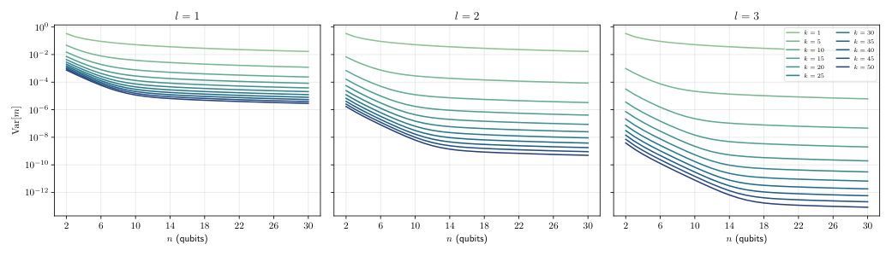
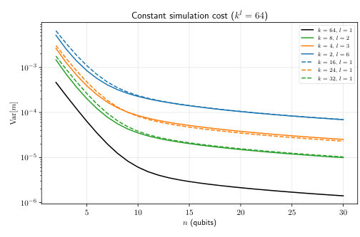

← Index · ← Previous · Next →
Authors: Iordanis Kerenidis
Type: theory · Category: quantum information and computing · PDF: https://arxiv.org/pdf/2607.24014v1
Analysis basis: full PDF text, analyzed in chunks
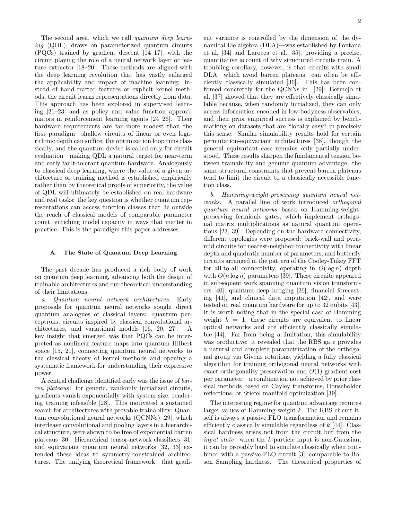
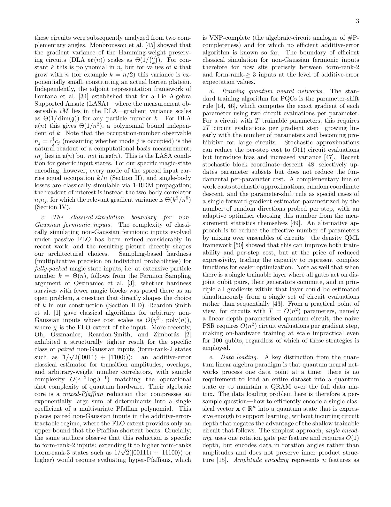
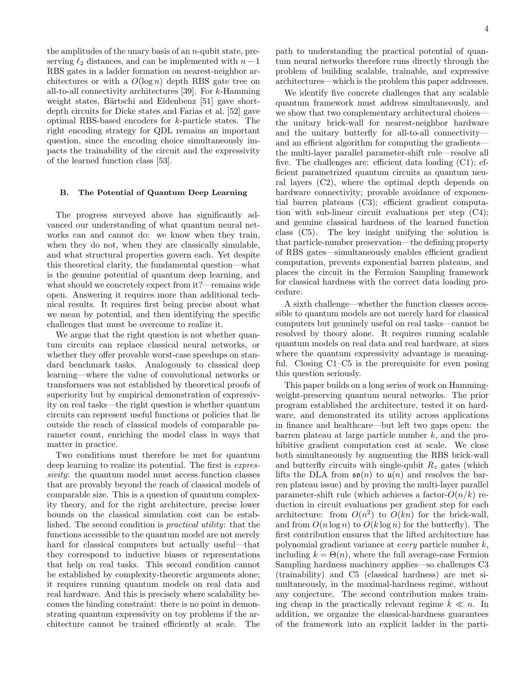
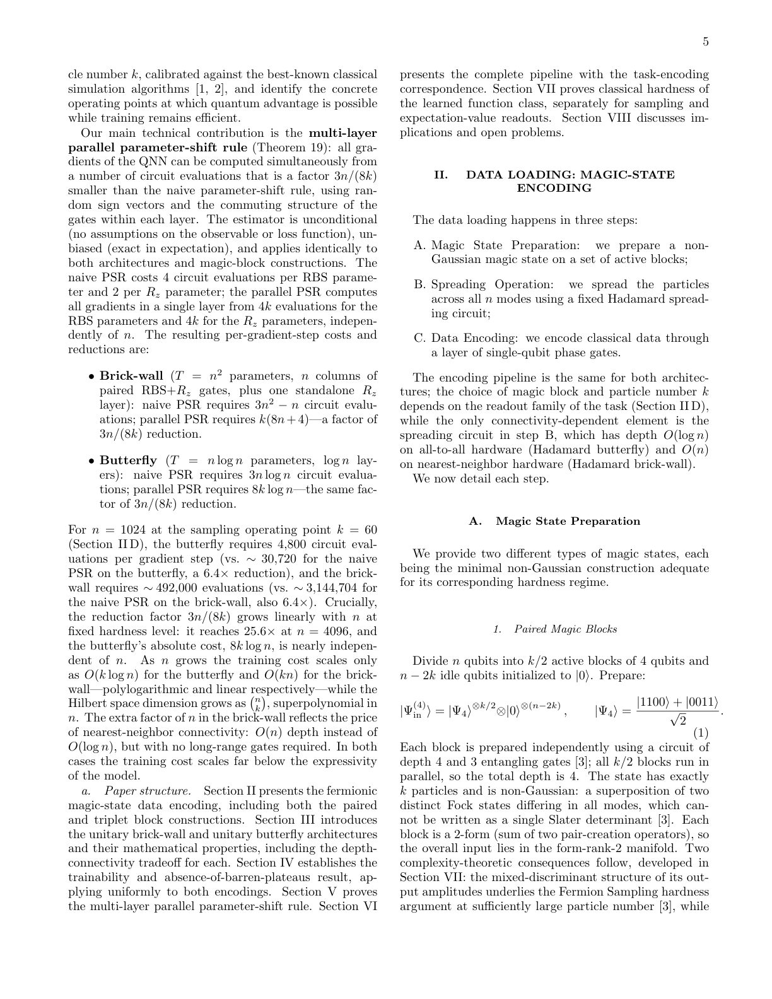
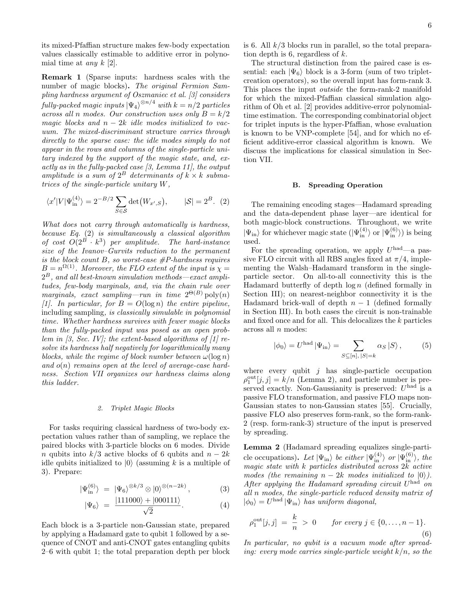
Summary. This paper introduces the 'unitary brick-wall' circuit as a scalable solution for Quantum Machine Learning by addressing issues like barren plateaus and high training costs. It demonstrates how tuning a key parameter ($k$) allows control over both the computational hardness and the gradient variance of the learned quantum function class.
Why it may be interesting. The work directly tackles the practical limitations of applying quantum computation to ML tasks, providing concrete architectural proposals that improve gradient calculation efficiency while maintaining desirable quantum complexity features.
Main problem. The core challenge is designing scalable parameterized quantum circuits (PQCs) for machine learning that overcome barren plateaus, guarantee classical hardness, and maintain efficient gradient computation.
Main result. The proposed 'unitary brick-wall' architecture addresses these issues by tuning the particle number $k$ to balance training cost against provable computational hardness. The butterfly variant achieves similar guarantees with reduced circuit evaluations per step.
Method. Theoretical analysis involving constructing specific fermionic architectures, analyzing gradient variance scaling ($\Theta(k^2/n^5)$), and employing advanced parameter-shift rules for efficient gradient calculation.
Model / system. The model is a parameterized quantum circuit (PQC) based on $k$-particle fermionic architectures, specifically the 'unitary brick-wall' or its all-to-all variant. These circuits utilize Reconfigurable Beam Splitter gates and are designed to operate on nearest-neighbor or all-to-all hardware.
Key observables. Gradient variance ($\Theta(k^2/n^5)$), classical simulation time ($2^{\Theta(k)} ext{poly}(n)$), and the number of circuit evaluations required per gradient step ($O(n^2)$ or $O(n \log n)$).
Important parameters / regimes. The particle number $k$ acts as a critical tunable dial controlling the trade-off between classical hardness and training cost. The system size is parameterized by $n$.
Assumptions / limitations. For the butterfly variant, the sharp gradient variance rate holds under a two-particle approximate-2-design conjecture.
Paper structure. The paper first identifies three fundamental obstacles in QML scalability. It then proposes and analyzes the unitary brick-wall circuit for nearest-neighbor hardware, detailing its trainability, expressivity (hardness), and efficiency improvements over standard methods. An alternative butterfly variant is also presented, followed by a discussion of related theoretical concepts like spectral gaps and 2-design properties.
Designing scalable parameterized quantum circuits for machine learning faces three fundamental obstacles: barren plateaus that prevent gradient-based training, the absence of provable guarantees that the learned function class is classically hard, and prohibitive circuit evaluations per gradient step. We propose the unitary brick-wall: a $k$-particle fermionic architecture for nearest-neighbor hardware, combining Reconfigurable Beam Splitter gates with interleaved single-qubit phase gates and a non-Gaussian magic-state encoding, where the particle number $k$ is a tunable dial trading classical simulation hardness against training cost. Trainable. The brick-wall has dynamical Lie algebra $\mathfrak{u}(n)$ and directly parametrizes $U(n)$ via Givens rotations, enabling Haar initialization. Two-body correlator readouts achieve gradient variance $Θ(k^2/n^5)$. Expressive. Classical hardness is controlled by the particle number $k$: best-known classical algorithms for sampling and for two-body expectation values run in time $2^{Θ(k)}\mathrm{poly}(n)$, worst-case #P-hardness holds at $k = n^ε$, and average-case hardness applies at $k = Θ(n)$. Efficient. A multi-layer parallel parameter-shift rule computes all $O(n^2)$ gradients from $k(8n+4)$ circuit evaluations per gradient step, a factor $3n/(8k)$ reduction over the $3n^2$ evaluations required by the standard parameter-shift rule. The unitary butterfly variant targets all-to-all hardware, with depth $2\log n$ and $n\log n$ parameters. It achieves similar hardness guarantees at $8k\log n$ evaluations per gradient step, the same factor $3n/(8k)$ reduction. Its trainability is established at two levels: the absence of exponential barren plateaus is unconditional, whereas the sharp $Θ(k^2/n^5)$ rate holds under a two-particle approximate-2-design conjecture.
Authors: Anuj Apte
Type: theory · Category: disordered systems and neural networks · PDF: https://arxiv.org/pdf/2607.23777v1
Analysis basis: full PDF text, analyzed in chunks
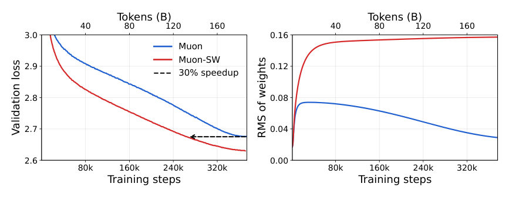
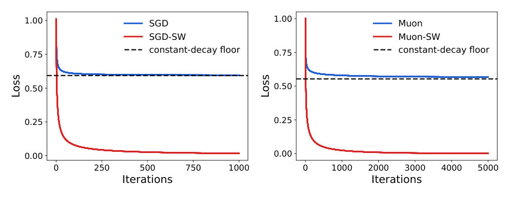
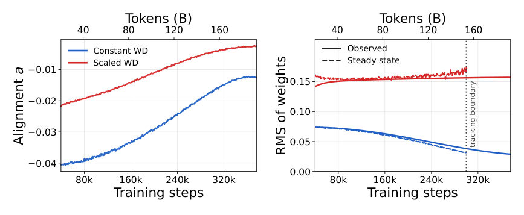
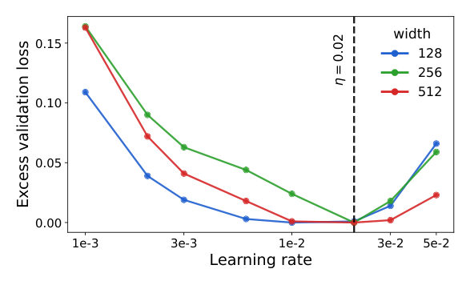
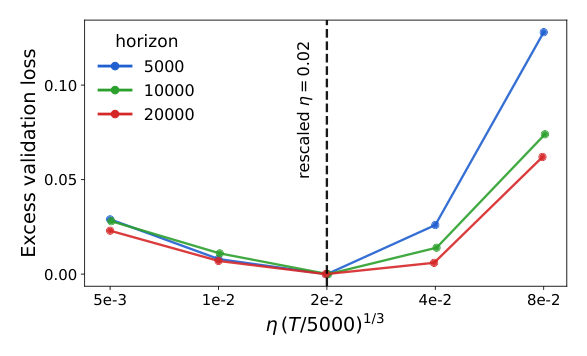
Summary. This paper introduces 'Scale Weight Decay' as a principled replacement for standard weight decay in deep learning optimization. By scaling the decay term based on the current learning rate, it mathematically proves that the regularization does not bias the convergence target. Empirically, this method significantly accelerates the training of massive models like MoE.
Why it may be interesting. While purely computational, the mathematical rigor concerning asymptotic optimization guarantees (Robbins–Monro conditions) is highly relevant to understanding the long-term stability of complex quantum simulations or variational algorithms that rely on iterative minimization.
Main problem. Standard constant decoupled weight decay introduces an asymptotic bias during training on massive datasets, potentially preventing convergence to the true minimum of the loss function.
Main result. The proposed scaled weight decay preserves the asymptotic stationarity guarantees for both SGD and Muon optimizers, leading to substantial speedups (up to 30%) in training large models like MoE.
Method. The authors propose scaling the standard weight decay term by the ratio of the current learning rate to the peak learning rate ($\eta_t/\eta_{\max}$), which ensures the regularization perturbation enters at a higher order ($O(\eta_t^2)$).
Model / system. The work analyzes the optimization process for training large neural networks, specifically focusing on Mixture-of-Experts (MoE) models using optimizers like Muon.
Key observables. Validation loss vs. training steps, RMS norm of weights vs. training steps, and convergence rate comparison between standard and scaled decay methods.
Important parameters / regimes. Learning rates ($\eta_t$, $\eta_{\max}$), weight decay constant ($\lambda$), model size (up to 930 million parameters).
Assumptions / limitations. The analysis relies on Robbins–Monro conditions for stochastic approximation schemes, assuming the loss function is L-smooth and bounded below.
Figures summary. Figures compare validation loss curves showing Muon-SW reaching target losses faster than standard Muon. Weight norm plots illustrate that scaled decay allows the weight norm to settle at a constant value rather than steadily decaying.
Paper structure. The paper establishes the theoretical failure of constant weight decay, proposes and proves the convergence benefits of scaling the decay term by $\eta_t/\eta_{\max}$, and validates this improvement empirically on large-scale MoE training benchmarks.
The discovery of scaling laws has motivated training neural networks on ever increasing quantities of data. This is typically done with a constant decoupled weight decay which causes the network weights to shrink steadily over the course of training. Taking inspiration from the Robbins--Monro conditions, we propose to scale weight decay by the fraction of the peak learning rate $η/η_{\max}$. We prove that this scaled weight decay preserves the asymptotic stationarity guarantees of the corresponding unregularized methods for both stochastic gradient descent and the non-Euclidean spectral optimizer Muon, thereby avoiding the additional asymptotic bias introduced by constant decoupled weight decay. This retains the stability benefits of weight decay without changing the asymptotic optimization target. Using a steady-state analysis, we explain why under standard weight decay the weight norm shrinks steadily as training proceeds, whereas under scaled weight decay it settles to a roughly constant value. When applied to the training of mixture-of-experts models, Muon with scaled weight decay (Muon-SW) consistently outpaces Muon with identical hyperparameters, reaching the same validation loss $\mathbf{30\%}$ faster at our largest scale across models from $72 - 930$ million parameters trained at $\sim 600$ tokens per active parameter. If this trend continues to hold, the method promises to substantially accelerate the pre-training of frontier models while requiring only a few lines of code to implement.
Authors: Nikhil Khatri, Stefan Zohren, Gabriel Matos
Type: theory · Category: quantum information and computing · PDF: https://arxiv.org/pdf/2607.24686v1
Analysis basis: full PDF text, analyzed in chunks


Summary. This paper introduces the Stacked Linear Combination of Unitaries (S-LCU) as a variational ansatz to resolve the tension between quantum circuit expressivity and training stability. By analyzing its loss landscape variance using moment calculations, the authors show that the depth parameter ($l$) acts as a dial, allowing users to systematically tune the trade-off between classical simulation cost and barren plateau risk.
Why it may be interesting. The systematic control over circuit expressivity versus barren plateau susceptibility via a single parameter ($l$) is highly relevant for designing practical, hardware-efficient quantum algorithms.
Main problem. The paper addresses the fundamental conflict between designing variational quantum circuits that are expressive enough for quantum advantage (which often leads to barren plateaus) and those that remain classically tractable.
Main result. They propose a Stacked Linear Combination of Unitaries (S-LCU) ansatz, demonstrating that its depth parameter ($l$) provides a tunable trade-off, allowing practitioners to systematically balance computational complexity against the rate of cost concentration in the loss landscape variance.
Method. The analysis employs diagrammatic techniques and moment calculations (first and second moments) on the expectation value of the cost function's variance ($ ext{Var}[m]$).
Model / system. The model is the S-LCU, specialized to the Free Fermion S-LCU (FF-S-LCU), which uses fermionic Gaussian unitaries acting on $n$ fermionic modes. The underlying mathematical framework involves calculating integrals over Haar distributed unitaries.
Key observables. Variance of the cost function ($ ext{Var}[m]$), first and second moments of observables, and the quantum gate complexity vs. classical simulation cost.
Important parameters / regimes. Number of layers ($l$), number of qubits/fermionic modes ($n$), and the number of terms per layer ($k$).
Assumptions / limitations. Unitaries are drawn from the Haar distribution over a compact group, and coefficients follow a Dirichlet distribution. The analysis relies on specific moment calculations for fermionic Gaussian unitaries.
Paper structure. The paper develops results by first analyzing the general S-LCU structure using diagrammatic methods to derive bounds on $ ext{Var}[m]$. It then specializes this to the FF-S-LCU, providing explicit formulas for the first and second moments based on layer independence. The appendix details the rigorous mathematical machinery (e.g., Gram matrix calculations) required for these moment derivations.
Variational quantum circuits have been central to many proposed near-term applications of quantum computing, but a growing body of evidence suggests that trainability and quantum advantage are fundamentally at odds: ansätze expressive enough to resist efficient classical simulation tend to exhibit barren plateaus, while structures that provably rule out barren plateaus typically render them classically simulable. We propose a stacked linear combination of unitaries (S-LCU) as a variational ansatz which provides a tunable trade-off between barren plateaus and classical simulability. Using a diagrammatic analysis, we bound the loss-landscape variance of the Free Fermion S-LCU, whose elements are fermionic Gaussian unitaries. We prove a variance lower bound of $Ω(1/(n k^{3l}))$, with a simulation cost of $O(k^{2l} n^3)$ using the best known classical algorithm, compared to a quantum gate complexity of only $O(lkn^2)$. The number of layers $l$ serves as a single dial that trades computational complexity against the rate of cost concentration. This offers practitioners a systematic method for constructing ansätze with a complexity-trainability trade-off that best suits their application and hardware.
Authors: Mohammad Chalhoub, Mahdi Chehimi, Laia Domingo, Omar Alhussein, Ahmed Farouk, Saif Al-Kuwari
Type: both · Category: other · PDF: https://arxiv.org/pdf/2607.24288v1
Analysis basis: full PDF text, analyzed in chunks
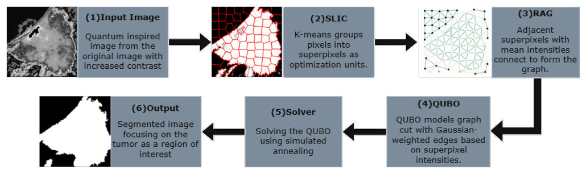
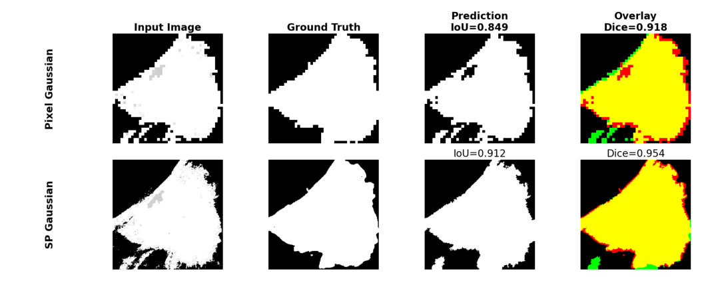
Summary. This paper introduces a superpixel-based framework to solve medical image segmentation using Quadratic Unconstrained Binary Optimization (QUBO). By clustering pixels into perceptually coherent regions, the authors drastically reduce the problem size from tens of thousands of variables to dozens while preserving full resolution. This results in superior segmentation quality and massive computational speedups, making quantum optimization feasible for real-world clinical data.
Why it may be interesting. While the core application is in medical imaging (CV/ML), the methodology involves mapping a complex combinatorial optimization problem onto a QUBO structure suitable for quantum annealers. The successful reduction of variables while maintaining fidelity is highly relevant to scaling up any NISQ-era quantum algorithm implementation.
Main problem. The core problem is performing high-fidelity medical image segmentation, specifically on mammography images, which requires processing large amounts of pixel data.
Main result. The superpixel-based QUBO framework significantly improved segmentation quality (4.2% relative IoU improvement) and achieved a 33x speedup compared to pixel-level methods while drastically reducing the problem size for quantum solvers.
Method. A novel approach uses SLIC clustering to group pixels into perceptually meaningful superpixels, which are then used to construct a Region Adjacency Graph (RAG). The segmentation objective is formulated as a QUBO over this graph structure.
Model / system. The model is the Quadratic Unconstrained Binary Optimization (QUBO) formulation of an energy function that combines min-cut and smoothness objectives. This framework is designed to map directly onto quantum annealing hardware, utilizing binary variables representing superpixel labels.
Key observables. Mean Intersection over Union (IoU), Mean Dice Coefficient, computational runtime (seconds), and the size of the QUBO matrix/number of variables.
Important parameters / regimes. Superpixel count ($K=60$), smoothness hyperparameter ($\alpha=10$), Gaussian kernel scale parameter ($\sigma$).
Assumptions / limitations. The primary assumption is that grouping pixels into superpixels preserves enough structural information to allow for accurate segmentation, overcoming the data loss inherent in simple downsampling techniques.
Figures summary. Figures illustrate the entire pipeline: SLIC clustering $ ightarrow$ RAG construction with Gaussian weights $ ightarrow$ QUBO formulation $ ightarrow$ Optimization $ ightarrow$ Final Segmentation Mask. Comparisons show visual improvements over pixel-level artifacts.
Paper structure. The paper follows a structure of identifying the limitation (scalability of pixel-QUBO), proposing the superpixel solution using SLIC and RAG, detailing the mathematical QUBO formulation derived from graph objectives, validating this method on mammography images against baselines, and concluding with performance metrics.
Quadratic unconstrained binary optimization (QUBO) has emerged as a powerful framework for medical computing problems. Binary decision variables naturally represent clinical choices, making QUBO formulations well-suited for quantum annealing hardware. However, a fundamental scalability challenge limits practical deployment: problem size grows rapidly with input dimensionality, creating computational bottlenecks that restrict applications to simplified scenarios. This paper addresses this challenge through hierarchical problem reduction, as demonstrated in medical image segmentation, where pixel-level QUBO formulations create over 65,000 variables for a 256x256 image, forcing existing approaches to downsample to 42x42 resolution and discard 97% of pixel information. A superpixel-based QUBO framework is proposed using simple linear iterative clustering (SLIC) to group pixels into perceptually meaningful regions, then formulate segmentation as QUBO over a region adjacency graph (RAG) combining min-cut and smoothness objectives. Validation on INbreast mammography breast cancer images demonstrates a 4.2% improvement in segmentation quality (mean IoU 0.76 vs 0.73) with 33 computational speedup (0.67s vs 21.97s) and a 97.3% reduction in problem size (1764 to 48 variables), all achieved while processing full-resolution images rather than downsampled versions. The reduced problem size also fits well within current quantum annealer connectivity limits, removing the embedding overhead that has historically blocked direct deployment of pixel-level QUBO segmentation on quantum hardware.
Authors: E. F. Talantsev
Type: theory · Category: strongly correlated electrons · PDF: https://arxiv.org/pdf/2607.23484v1
Analysis basis: full PDF text, analyzed in chunks
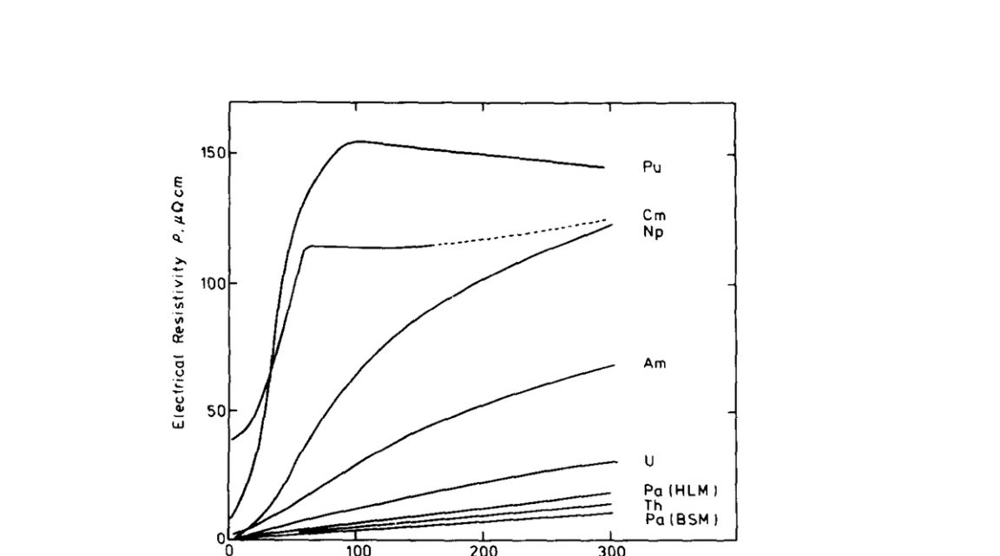
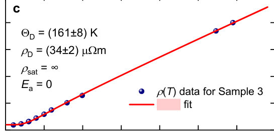
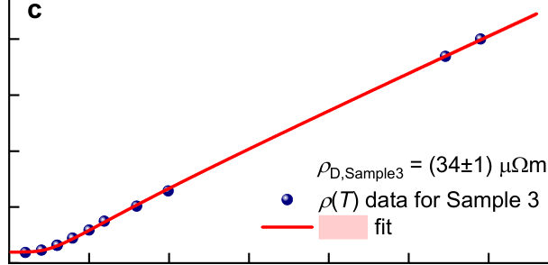
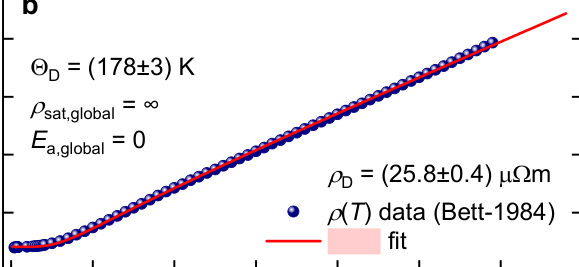
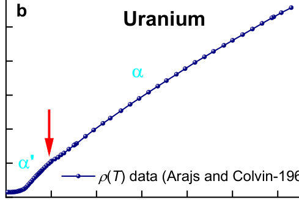
Summary. This paper addresses the lack of a unified theory for understanding temperature-dependent electrical resistivity in actinides by proposing a two-channel parallel resistance model. The model combines an Arrhenius term (for nearest-neighbor hopping) with a Bloch-Grüneisen term (for electron-phonon scattering). By successfully fitting data across multiple actinide elements, it provides a quantitative framework for analyzing the complex electronic transport mechanisms in these materials.
Why it may be interesting. The study tackles the complex transport properties of actinides, which are quintessential examples of strongly correlated electron systems due to their partially filled $5f$ orbitals. Developing a successful empirical fit that incorporates both hopping and phonon mechanisms provides valuable physical insight into the underlying electronic structure.
Main problem. Experimental temperature-dependent electrical resistivity data for actinides are highly variable, lacking a unified theoretical approach for understanding and fitting these measurements.
Main result. The authors propose a model based on two parallel conduction channels (Arrhenius hopping and Bloch-Grüneisen) that successfully fits the $\rho(T)$ data for eight elemental actinide phases.
Method. The resistivity is modeled as the reciprocal sum of conductivities from two distinct channels: one governed by Arrhenius behavior (NNH conductivity) and the other by electron-phonon scattering (Bloch-Grüneisen).
Model / system. The system under study is pure elemental actinides (Th to Cm) and related alloys. The model, termed the NNH-parallel resistance model, treats total resistance as a parallel combination of two conduction channels: $\rho(T) = 1/(\sigma_{ ext{Arr}}(T) + \sigma_{ ext{BG}}(T))$.
Key observables. Temperature-dependent electrical resistivity ($\rho(T)$), Debye temperatures ($\Theta_D$), and Arrhenius activation energy ($E_a$).
Important parameters / regimes. Actinide elements (Th, Pa, U, Np, Pu); $E_a = 15.9$ meV for Np; $\Theta_D$ values consistent with heat capacity measurements.
Assumptions / limitations. Matthiessen's rule is inapplicable for single-phase elemental metals, requiring the total resistance to be treated as a parallel combination of conduction channels.
Figures summary. Figures illustrate successful fits using the proposed model (Equation 10) across various actinide phases (Th, Pa, U, Np), comparing raw data against theoretical curves for both single-phase and multi-phase materials.
Paper structure. The paper establishes the problem of $\rho(T)$ variability in actinides. It then introduces the two-channel parallel resistance model ($\rho(T) = 1/(\sigma_{ ext{Arr}} + \sigma_{ ext{BG}})$). The core is applying and validating this model across multiple actinide elements, showing its success while noting specific parameters derived for each.
Temperature-dependent electrical resistivity $ρ(T)$ is one of the most common types of experimental data analyzed in condensed matter physics. For one group of pure metals, the actinides, experimental $ρ(T)$ curves differ radically from one another to the point that there is no unified theoretical approach to understanding and fitting $ρ(T)$ data in these elements. First-principles calculations result in $ρ(T)$ curves that differ from experimental data, even qualitatively. In an attempt to unravel this long-standing problem, here I propose a simple model that accurately fits the $ρ(T)$ data for eight phases of elemental actinides (from thorium (Th) to curium (Cm)) for which experimental data are publicly available to date. The model is based on the concept of two parallel conduction channels: one is described by the Bloch-Grüneisen equation, which is associated with the classical electron-phonon dissipation mechanism, and the other by the Arrhenius equation, which is associated with the nearest-neighbor hopping (NNH) conductivity. Debye temperatures $Θ_D$ derived from application of the model to $ρ(T)$ data for eight elemental actinide phases agree well with reported values deduced from heat capacity measurements. For neptunium (Np) a maximum Arrhenius activation energy (among all actinides) of $E_a=15.9$ $meV$ was derived. The model was also successfully applied to $ρ(T)$ data measured on $δ$-phase plutonium-based alloys Pu-Ce and Pu-Ce-Ga.
Papers from cond-mat.mtrl-sci, mes-hall, other, soft, supr-con. These archives are de-prioritized — they appear at the end regardless of relevance score.
Highlighted author(s): Johannes Knolle
Authors: Ipsika Mohanty, Johannes Knolle, Silvia Viola Kusminskiy
Type: both · Category: other · PDF: https://arxiv.org/pdf/2607.23170v1
Analysis basis: full PDF text, analyzed in chunks
Topic relevance: 🔥 spintronics-quantum-optics interface 4/5 · analog quantum simulation 3/5 · driven-dissipative phase transition 3/5 · exotic spin models in light-matter 3/5 · methods for driven-dissipative 2/5 · non-equilibrium dynamics 2/5 · quantum optics experiment 2/5 · Keldysh / 2PI / non-Gaussian methods 1/5 · Tavis-Cummings & cavity-many-emitter 1/5 · correlated cavity matter 1/5 · non-equilibrium universality 1/5
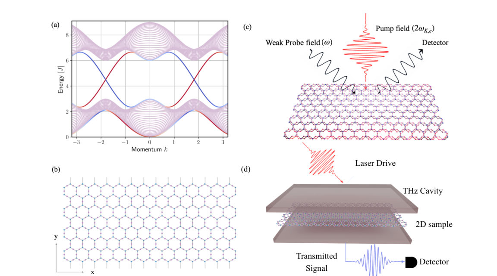
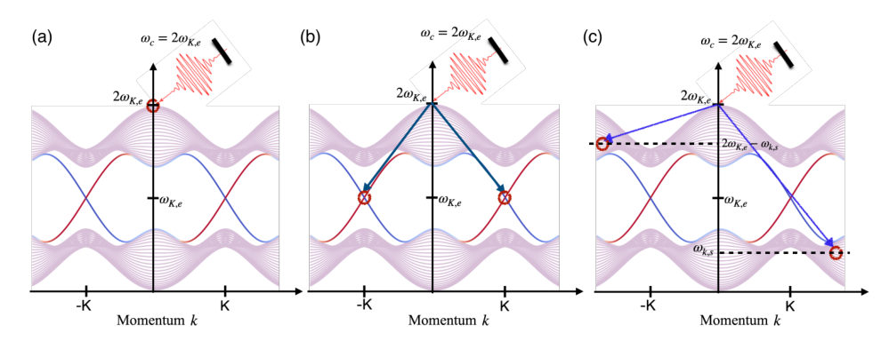
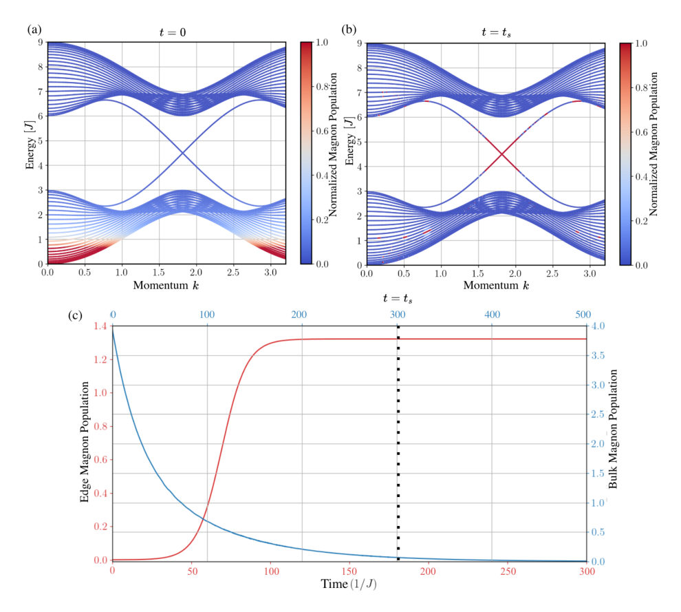
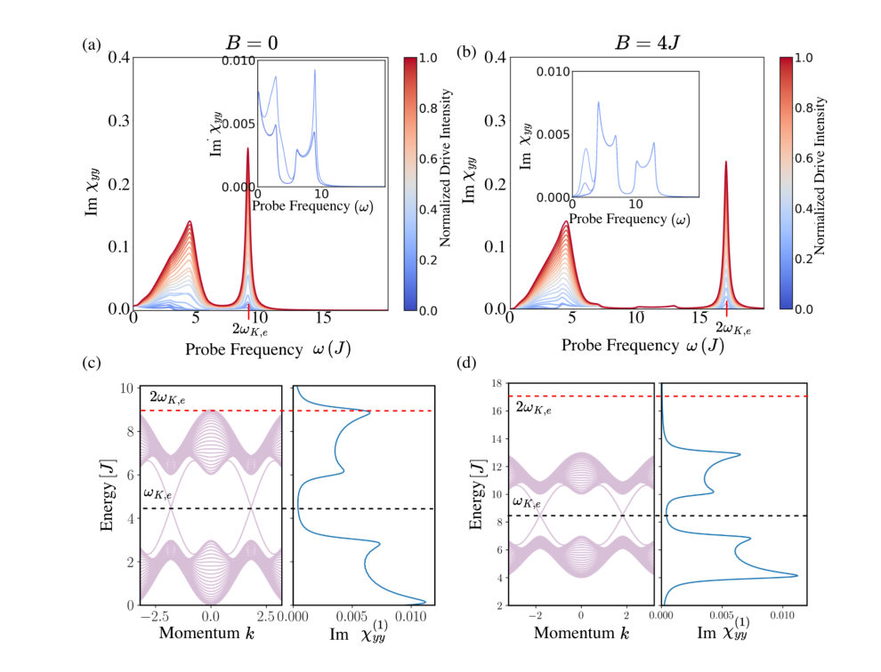
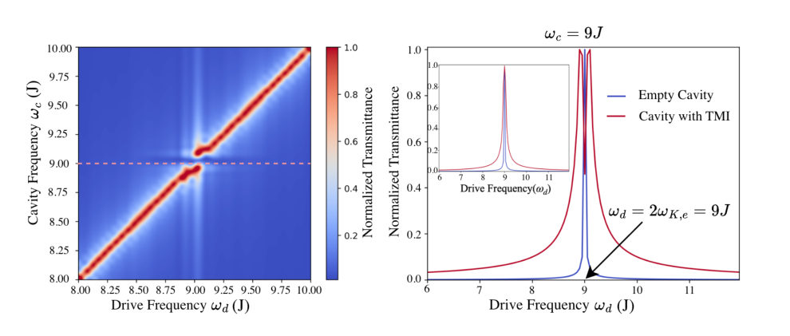
Summary. This paper outlines an advanced all-optical method to detect elusive topological magnon edge modes in 2D ferromagnetic insulators using THz spectroscopy. By leveraging the magnetoelectric coupling, they propose exciting these robust edge states through parametric amplification driven by resonant electromagnetic fields. This establishes a crucial experimental pathway for exploring topological phenomena in magnetic quantum materials.
Why it may be interesting. This work bridges condensed matter magnetism with quantum optics/AMO physics by proposing a highly specific, non-linear optical measurement technique to probe exotic topological states in magnetic materials. The reliance on parametric amplification via magnetoelectric effects is key for AMO physicists studying light-matter interactions.
Main problem. The primary goal is to develop an all-optical method to experimentally detect robust, chiral topological magnon edge states in ferromagnetic Topological Magnon Insulators (TMIs), as conventional probes lack sufficient sensitivity.
Main result. The authors propose a THz pump-probe spectroscopy protocol that uses parametric amplification via magnetoelectric coupling ($\omega_{ ext{pump}} = 2\omega_{K,e}$) to selectively excite and detect these edge modes. They also discuss using THz cavities for spectral filtering of bulk contributions.
Method. The theoretical framework combines spin wave theory (Holstein-Primakoff) with the inclusion of electromagnetic coupling ($\hat{H}_{ ext{int}}$), analyzing processes like magnon pair creation/annihilation under resonant driving conditions.
Model / system. The system is a 2D van der Waals ferromagnetic material on a honeycomb lattice, modeled by an extended Heisenberg Hamiltonian incorporating Dzyaloshinskii-Moriya interaction (DMI). The detection relies on coupling the magnons to external THz electromagnetic fields.
Key observables. Topological magnon edge modes; spectral signatures in absorption following parametric amplification; two-magnon density of states ($ ho^{(2)}(\omega)$); and bulk demagnetization effects.
Important parameters / regimes. Terahertz (THz) frequency range; pump intensity ($I$); resonance condition $\omega_{ ext{pump}} = 2\omega_{K,e}$; and the strength of magnetoelectric coupling.
Assumptions / limitations. The analysis assumes the dipolar limit for the EM field ($\lambda \gg$ sample size), utilizes Linear Spin Wave Theory (LSWT), and employs approximations like the Rotating Wave Approximation (RWA).
Figures summary. Figures illustrate magnon band structures showing chiral edge modes, schematics of pump-probe setups using THz cavities, and plots detailing edge mode splitting versus pump intensity.
Paper structure. The paper builds from establishing the theoretical necessity for an all-optical detection route to deriving the coupling Hamiltonian ($\hat{H}_{ ext{int}}$) via magnetoelectric effects. It then details two experimental proposals: THz pump-probe spectroscopy and cavity coupling, supported by symmetry analysis (AM conservation) when considering circular polarization.
Topological magnon insulators (TMIs) have emerged as promising platforms for low-energy spin-based information processing, due to their non-trivial bulk magnon topology and robust, chiral edge modes that support dissipationless transport. Although theoretical models predict these edge states, direct experimental detection remains challenging due to their limited sensitivity to conventional probes. In this work, we propose an all-optical pathway to detect topological magnon edge modes in ferromagnetic TMIs. Our approach harnesses parametric amplification of edge magnons via resonant electromagnetic driving, enabled by magnetoelectric coupling mechanisms. We concentrate on two-dimensional van der Waals ferromagnetic materials on the honeycomb lattice with magnonic band gaps in the terahertz (THz) range. We show that a spin-dependent effective electric dipole moment, arising from dynamic charge fluctuations and consistent with the lattice symmetry up to next-nearest-neighbor interactions, gives rise to one-photon-two-magnon processes leading to parametric amplification. On this basis, we propose a THz pump-probe spectroscopy protocol in which edge modes are selectively amplified and subsequently detected in absorption. Furthermore, we discuss the possibility of using THz cavities, enabling selective coupling to edge modes while filtering out bulk contributions. These findings establish a route for probing topological magnets and open new avenues for experimental exploration of exotic topological phenomena in magnetic quantum materials.
Authors: Junhui Cao, Kirill Bazarov, Alexey Kavokin
Type: theory · Category: other · PDF: https://arxiv.org/pdf/2607.24456v1
Analysis basis: full PDF text, analyzed in chunks
Topic relevance: 🔥 analog quantum simulation 4/5 · 🔥 driven-dissipative phase transition 4/5 · 🔥 methods for driven-dissipative 4/5 · correlated / nonlocal dissipation 3/5 · correlated cavity matter 3/5 · non-equilibrium universality 3/5 · Tavis-Cummings & cavity-many-emitter 2/5 · non-equilibrium dynamics 2/5 · Keldysh / 2PI / non-Gaussian methods 1/5 · Kondo & dissipative impurity 1/5 · entanglement & information structure 1/5
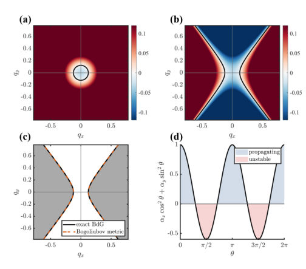
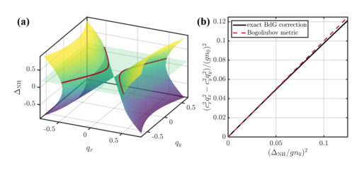
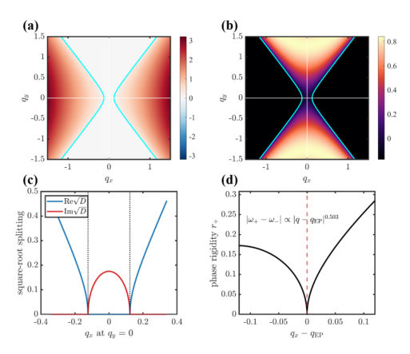
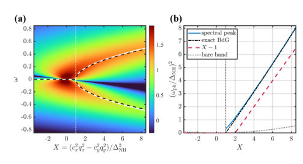
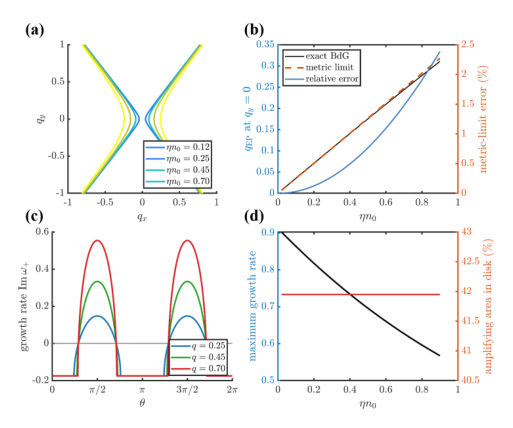
Summary. The paper investigates collective excitations in hyperbolic polariton condensates, finding that the underlying Bogoliubov metric is indefinite, unlike standard acoustic systems. This geometry dictates that gain saturation leads to an exceptional cone structure in parameter space. The study demonstrates that this framework allows for the controlled engineering and observation of non-Hermitian degeneracies using optical matter waves.
Why it may be interesting. This work directly connects geometric concepts (indefinite metrics) from condensed matter theory to topological features (exceptional degeneracies) in open quantum systems, providing a powerful framework for understanding non-Hermitian physics in controllable optical platforms like polaritons.
Main problem. To characterize the collective excitation geometry of a condensate formed in a hyperbolic polariton band, particularly how this relates to non-Hermitian exceptional degeneracies.
Main result. The system exhibits an indefinite Bogoliubov metric, causing the light cone to become a hyperbolic stability wedge. The resulting zero-discriminant surface forms a controllable exceptional cone/hyperbola structure in parameter space.
Method. Analysis involves linearizing the driven-dissipative condensate equation and deriving effective quadratic metrics (Bogoliubov metric) that govern the dispersion relation across different regimes.
Model / system. The system is modeled by a scalar driven-dissipative condensate equation describing hyperbolic polariton condensates. The physics is analyzed via Bogoliubov excitations, leading to non-Hermitian spectral analysis.
Key observables. Bogoliubov metric signature (indefinite), exceptional cone/hyperbola structure, eigenvalue splitting $|\omega_+ - \omega_-|$, and biorthogonal phase rigidity $r_+$.
Important parameters / regimes. Gain saturation ($\Delta_{NH}$), band curvatures ($\alpha_x\alpha_y < 0$), and interaction strength ($g$).
Assumptions / limitations. The analysis relies on the long-wavelength limit for deriving the effective metric, and it models the system using a driven-dissipative mean-field approach.
Figures summary. Figures illustrate spectral diagnostics showing the collapse of the particle spectral function onto the exact BdG hyperboloid near exceptional points (EPs), and real-space simulations show localized perturbations developing elongated, sign-alternating profiles aligned with unstable hyperbolic sectors.
Paper structure. The paper progresses from establishing the standard acoustic metric in ordinary condensates to deriving the indefinite Bogoliubov metric for hyperbolic polaritons. It then incorporates gain saturation to introduce non-Hermiticity, leading to the identification and characterization of the exceptional cone structure via spectral analysis and real-space evolution.
Long-wavelength Bogoliubov phonons in an ordinary condensate realize the standard acoustic Lorentz metric. We show that a condensate formed in a hyperbolic polariton band realizes a different collective geometry with an indefinite Bogoliubov metric whose spatial signature is inherited from the opposite signs of the band curvatures. This metric converts the acoustic light cone into a hyperbolic stability wedge, separating propagating quasiparticles from dynamically unstable ones. In a driven-dissipative condensate, gain saturation turns this metric relation into a non-Hermitian Bogoliubov dispersion. The zero-discriminant surface becomes an exceptional cone in the parametric space $(q_x,q_y,Δ_{\rm NH})$, appearing as an exceptional hyperbola at fixed gain saturation. Across this surface the Bogoliubov branches coalesce, the biorthogonal phase rigidity collapses, and the spectrum changes from propagation to amplified or overdamped dynamics. Our results identify hyperbolic polariton condensates as a controllable setting where non-Hermitian exceptional degeneracies are organized by an effective Bogoliubov metric.
Authors: J. Craquelin, L. Jarjat, B. Hue, A. Théry, C. Fruy, N. Struchkov, D. Stefani, M. M. Desjardins, A. Cottet, M. R. Delbecq, T. Kontos
Type: both · Category: other · PDF: https://arxiv.org/pdf/2607.23138v1
Analysis basis: full PDF text, analyzed in chunks
Topic relevance: 🔥 Frenkel-Kontorova 4/5 · analog quantum simulation 3/5 · driven-dissipative phase transition 3/5 · methods for driven-dissipative 3/5 · non-equilibrium dynamics 2/5 · non-equilibrium universality 2/5 · Keldysh / 2PI / non-Gaussian methods 1/5 · Kondo & dissipative impurity 1/5
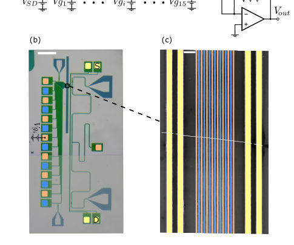
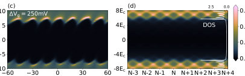
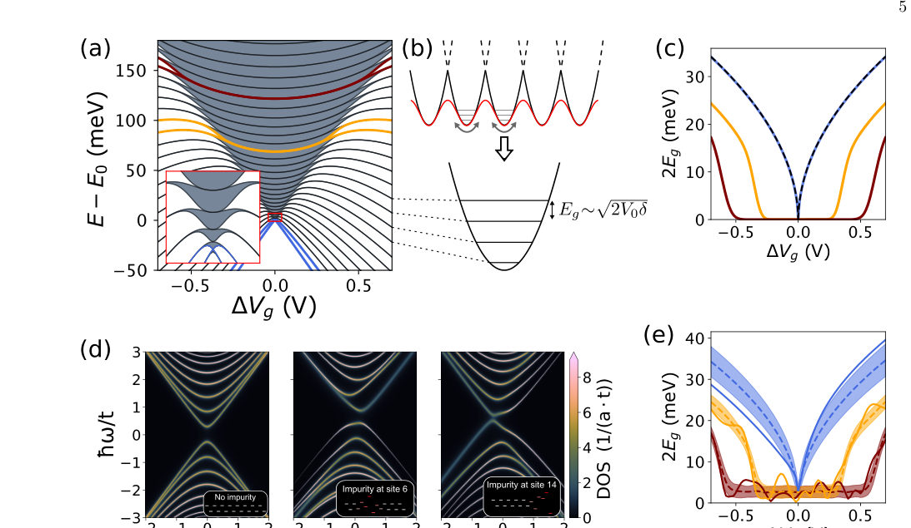
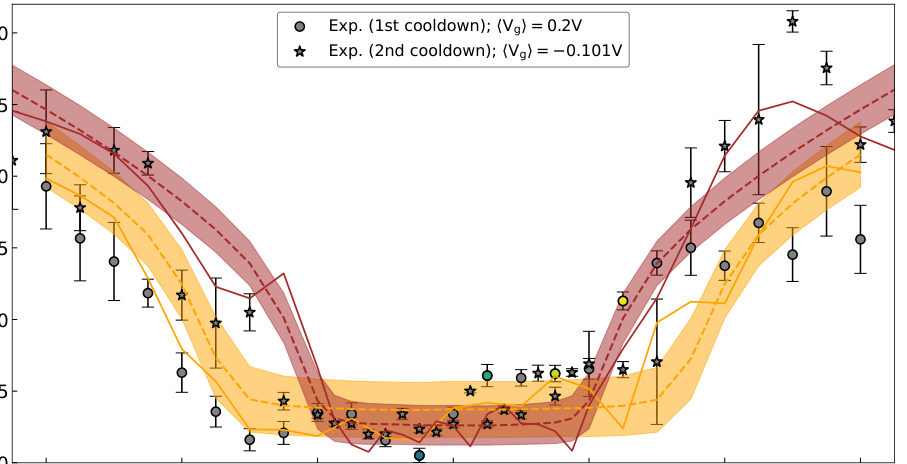
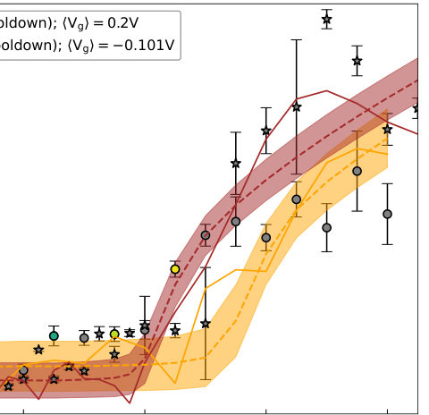
Summary. The researchers show how applying patterned gate voltages can electrically induce a large, tunable energy gap in a one-dimensional carbon nanotube, effectively controlling its transition between metallic and insulating states. By modeling this using Mathieu's equation, they confirm that the gap opening is a single-particle effect controllable by the modulation strength. This technique offers a powerful tool for engineering quantum materials at the nanoscale.
Why it may be interesting. This work provides an excellent platform for studying fundamental concepts like topological transitions and gap engineering in mesoscopic systems, which are highly relevant to realizing robust quantum components.
Main problem. The work demonstrates electrical control over the metal-insulator transition (MIT) in a one-dimensional nanoscale device by inducing and tuning a large energy gap.
Main result. A sizable, homogeneous energy gap ($E_g \approx 5 ext{ meV}$) can be opened and tuned across two orders of magnitude simply by spatially modulating the local potential using external gates.
Method. The study combines transport measurements (differential conductance mapping) with theoretical modeling based on solving the Schrödinger equation for a cosine-modulated potential, leading to Mathieu's equation.
Model / system. The physical system is a suspended carbon nanotube patterned over multiple individually controlled gates. The underlying model treats the electronic structure as being governed by an effective periodic potential, analogous to the Su–Schrieffer–Heeger (SSH) chain or a cosine potential solved via Mathieu functions.
Key observables. Differential conductance ($G_{ ext{diff}}$) maps showing transitions between metallic and insulating states; the magnitude of the energy gap ($E_g$).
Important parameters / regimes. Gate modulation amplitude ($\Delta V_g$), temperature ($\approx 30 ext{ mK}$), and the periodicity/wavelength of the potential modulation.
Assumptions / limitations. The analysis often assumes a non-interacting electron picture, simplifying the full Poisson-Schrödinger problem to an effective single-particle Hamiltonian solvable by Mathieu functions or tight-binding diagonalization.
Figures summary. Figures show differential conductance maps comparing weak vs. strong gate modulation, illustrating the transition from conductive (metallic) to gapped (insulating) behavior; theoretical plots confirm gap opening based on the modulated potential strength.
Paper structure. The paper progresses by establishing the experimental setup and observing the MIT via transport measurements, then developing a theoretical framework using Mathieu's equation to model the gate-induced periodic potential, culminating in quantitative agreement between theory (including disorder) and experiment.
Controlling the low energy spectrum at the nanoscale with an external physical parameter has become an important resource for quantum devices. The emergence of an energy gap is one such key feature, linked to the mitigation of decoherence needed for quantum information processing. Indeed, the detrimental effects of high-energy uncontrolled excitations can only be cured at some specific tuning points in general. Achieving an energy gap is a natural way to extend decoherence countermeasures over a finite region of parameter space. This would be particularly useful in view of the recent efforts to build superconducting topological chains in a top-down approach. In this work, we demonstrate a large energy gap by spatially modulating the local potential of a suspended carbon nanotube, exploiting an analogy with condensed matter systems. This gap is homogeneous on the nanotube and tunable by about two orders of magnitude, bringing the electronic system from an insulating state to a near-metallic state at low temperatures.
Authors: Dayana Joy, Vivek Pandey, Rhonald Burgos Atencia, Pankaj Bhalla
Type: theory · Category: other · PDF: https://arxiv.org/pdf/2607.24671v1
Analysis basis: full PDF text, analyzed in chunks
Topic relevance: 🔥 Keldysh / 2PI / non-Gaussian methods 4/5 · methods for driven-dissipative 3/5 · non-equilibrium dynamics 3/5 · non-equilibrium universality 2/5 · analog quantum simulation 1/5 · correlated / nonlocal dissipation 1/5 · driven-dissipative phase transition 1/5
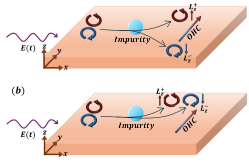
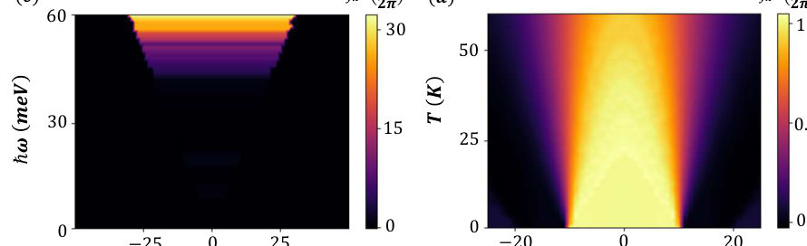
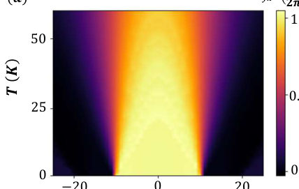
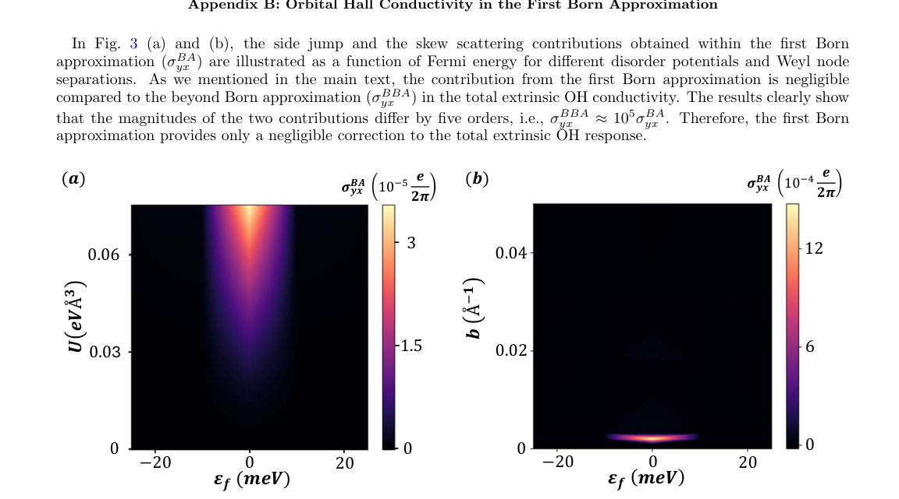
Summary. This theoretical study calculates how disorder influences the orbital Hall conductivity in Weyl semimetals. By analyzing side-jump and skew scattering contributions using a quantum kinetic approach, the authors show that higher-order disorder terms dominate the effect. The results highlight that this topological transport property can be actively tuned by controlling material parameters like disorder strength and energy.
Why it may be interesting. Although focused on condensed matter transport, the use of non-equilibrium quantum kinetic equations and perturbation theory to analyze response functions under external driving fields shares mathematical formalism with open quantum systems dynamics.
Main problem. The study investigates the disorder-induced contribution to the orbital Hall conductivity ($\sigma_{OH}$) in three-dimensional Weyl semimetals that possess broken time-reversal symmetry.
Main result. Skew scattering dominates over side-jump mechanisms, and the extrinsic $\sigma_{OH}$ can be significantly enhanced by tuning the disorder potential strength, applied energy, and Weyl node separation.
Method. The analysis employs the quantum kinetic equation framework, solving for off-diagonal components of the density matrix using perturbation theory up to third order in the disorder potential.
Model / system. The system is a 3D Weyl semimetal described by an effective k.p Hamiltonian, subjected to both a time-dependent external electric field and a random disorder potential U.
Key observables. Orbital Hall conductivity ($\sigma_{OH}$), transverse flow of orbital angular momentum (OAM).
Important parameters / regimes. Disorder potential strength ($U$), applied energy ($\hbar\omega$), Weyl node separation ($b$).
Assumptions / limitations. The analysis is performed for an AC-driven field ($\omega$) and involves extending the scattering term to beyond the first Born approximation to capture disorder dependence.
Figures summary. Figure 1 illustrates OHC generation via skew scattering (asymmetric scattering of OAM) versus the side-jump mechanism. Figure 2 shows $\sigma_{OH}$ vs $U$, $b$, and $\hbar\omega$, demonstrating linear dependence on $U$ and suppression as $b$ decreases.
Paper structure. The paper develops the theoretical framework using quantum kinetic theory, analyzes the contributions from side-jump and skew scattering mechanisms in the presence of disorder, derives the leading order disorder dependence ($U^3$), and concludes with quantitative results showing tunability of $\sigma_{OH}$.
Our study provides the disorder-induced contribution to the orbital Hall conductivity in three-dimensional Weyl semimetals with broken time-reversal symmetry. Using the quantum kinetic approach, we analyse the impact of side-jump and skew scattering contributions to the system. The dependence of the orbital Hall conductivity on both disorder potential and the Fermi energy is explicitly demonstrated. Furthermore, we demonstrate that the higher-order disorder contribution, especially from the third power of disorder potential, dominates the orbital Hall conductivity under an oscillating electric field in a time-reversal symmetry broken Weyl semimetal, suppressing other scattering mechanisms, including the side jump contributions. We can enhance the extrinsic orbital Hall conductivity by tuning the strength of the disorder potential, applied energy, and choosing the system with appropriate Weyl node separation. Finally, our results are supported by numerical estimations and highlight potential experimental relevance for advancing orbitronics device technologies.
Authors: Philippe Ben-Abdallah
Type: theory · Category: statistical mechanics · PDF: https://arxiv.org/pdf/2607.22845v1
Analysis basis: full PDF text, analyzed in chunks
Topic relevance: exotic spin models in light-matter 3/5 · spintronics-quantum-optics interface 3/5 · analog quantum simulation 2/5 · non-equilibrium dynamics 2/5 · non-equilibrium universality 2/5 · Keldysh / 2PI / non-Gaussian methods 1/5 · correlated / nonlocal dissipation 1/5 · driven-dissipative phase transition 1/5 · methods for driven-dissipative 1/5
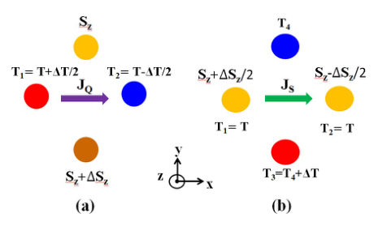
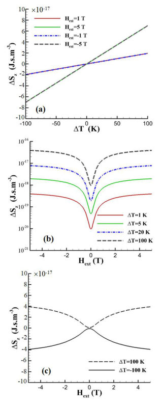
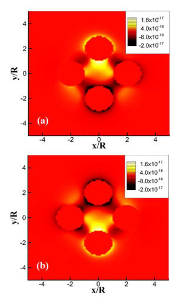
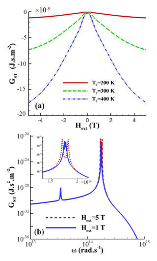
Summary. The paper develops the theory of photon spin caloritronics by predicting the Spin Thermal Hall Effect (STHE) in magneto-optical nanostructures. It proves that STHE and its inverse counterpart form an Onsager-Casimir pair, establishing a complete thermodynamic framework for coupling heat flow to spin angular momentum transport. This work lays conceptual foundations for designing nonreciprocal photonic thermal devices.
Why it may be interesting. This work bridges concepts from non-equilibrium thermodynamics (heat/spin coupling) with quantum optics and condensed matter transport, providing a theoretical framework for novel energy conversion devices based on spin polarization in photonic systems.
Main problem. To establish a complete thermodynamic framework for photon spin caloritronics by investigating the relationship between the Spin Thermal Hall Effect (STHE) and its reciprocal counterpart, the Inverse Spin Thermal Hall Effect (ISTHE).
Main result. The STHE and ISTHE form an Onsager-Casimir reciprocal pair, establishing a unified thermodynamic framework for photon spin caloritronics. The analysis yields a thermal-spin figure of merit quantifying conversion efficiency.
Method. Linear response theory is employed alongside fluctuational electrodynamics to derive reciprocity relations between coupled heat and spin fluxes driven by temperature gradients.
Model / system. The study models nonreciprocal magneto-optical many-body systems, specifically using four identical InSb nanoparticles arranged in a square lattice immersed in a thermal bath.
Key observables. Spin contrast ($\Delta S_z$), the thermal spin Hall susceptibility ($\chi_{ ext{STHE}}$), and the dimensionless figure of merit ($Z_{TS}$).
Important parameters / regimes. External magnetic field strength ($H_{ ext{ext}}$), temperature bias ($\Delta T$), and nanoparticle size/arrangement.
Assumptions / limitations. The analysis relies on linear-response theory and the application of Onsager–Casimir reciprocity relations derived from microscopic reversibility.
Figures summary. Figures illustrate the schematic relationship between heat gradients and spin accumulation (STHE) versus spin gradients and heat flux (ISTHE). Plots show $\Delta S_z$ dependence on $\Delta T$ and $H_{ ext{ext}}$, and spectral decomposition highlighting resonance features.
Paper structure. The paper develops the theory by defining coupled fluxes, applying linear response theory to derive transport coefficients ($G_{ij}$), establishing the Onsager-Casimir symmetry between STHE and ISTHE, and finally quantifying efficiency using a thermal-spin figure of merit.
We predict the spin thermal Hall effect in nonreciprocal magneto-optical many-body systems, in which a longitudinal radiative heat current generates a transverse accumulation of the spin angular momentum carried by thermal photons. We show that this effect and the inverse spin thermal Hall effect constitute an Onsager-Casimir reciprocal pair, thereby establishing heat and photon spin as coupled transport channels in nonreciprocal photonic systems. The second law of thermodynamics imposes fundamental bounds on the spin-heat coupling, leading to a thermal-spin figure of merit that quantifies the efficiency of radiative spin-heat conversion. Our results establish a complete thermodynamic framework for photon spin caloritronics and lay the conceptual foundations for spin-controlled thermal radiation and nonreciprocal photonic thermal devices.
Authors: Mingtao Xu, Rui Wang, Tian-Shu Deng, Wei Yi
Type: theory · Category: other · PDF: https://arxiv.org/pdf/2607.22976v1
Analysis basis: full PDF text, analyzed in chunks
Topic relevance: driven-dissipative phase transition 3/5 · methods for driven-dissipative 3/5 · analog quantum simulation 2/5 · non-equilibrium dynamics 2/5 · non-equilibrium universality 2/5 · Frenkel-Kontorova 1/5 · Keldysh / 2PI / non-Gaussian methods 1/5 · Kondo & dissipative impurity 1/5 · correlated / nonlocal dissipation 1/5
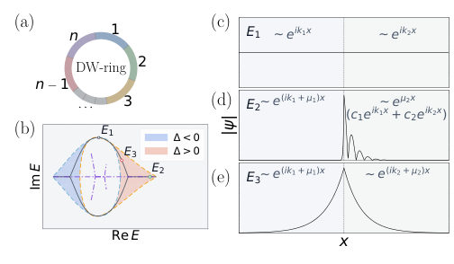
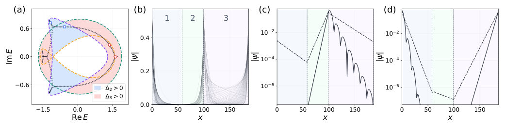
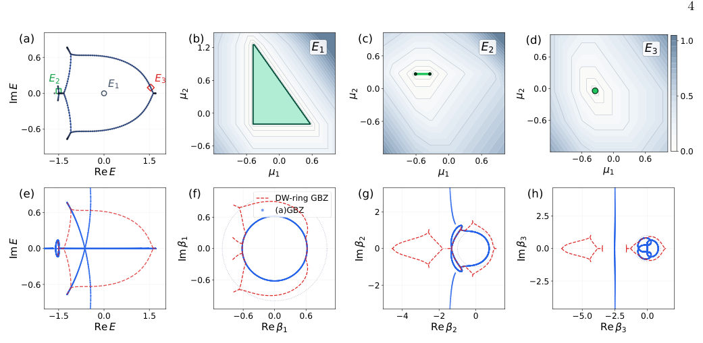
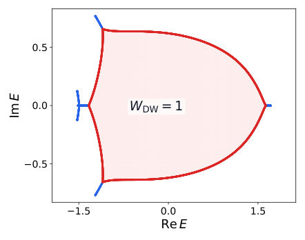
Summary. This paper develops a topological theory for non-Hermitian models arranged in a ring of domains (DW ring). It shows that the system supports two distinct types of skin modes—standing and traveling—whose existence is dictated by spectral winding number mismatches between adjacent domains. The methodology extends established band theories using constrained Ronkin functions to map out the generalized Brillouin zone for these complex boundary conditions.
Why it may be interesting. This work provides a rigorous topological framework for understanding localization in complex, non-Hermitian structures like domain walls, which is highly relevant to engineered quantum systems where boundary effects are crucial.
Main problem. The study investigates the spectral topology and non-Bloch band theory for one-dimensional non-Hermitian models arranged in a domain-wall (DW) ring configuration.
Main result. The system supports two distinct types of skin modes—standing-wave-like and traveling-wave-like—whose existence and properties are governed by different topological constraints derived from spectral winding numbers. The unique traveling-wave modes carry a finite flux spectral winding number, indicating boundary sensitivity.
Method. The authors extend the Ronkin-function formalism to the DW ring geometry and utilize spectral winding numbers ($\Delta_\alpha(E)$) to characterize topological protection and determine the Generalized Brillouin Zone (GBZ).
Model / system. The model is a general one-dimensional non-Hermitian system composed of $n$ domains connected in a ring geometry ($n$-DW ring), where the DW boundary generalizes both OBC and PBC.
Key observables. Spectral winding numbers ($\Delta_\alpha(E)$), Generalized Brillouin Zone (GBZ) conditions, standing-wave-like skin modes, traveling-wave-like skin modes, and Flux Spectral Winding Number ($ ext{WDW}$).
Important parameters / regimes. The number of domains ($n$), the energy $E$, and the complex momentum parameters $\mu_\alpha$.
Assumptions / limitations. The analysis relies on extending established formalisms (like Ronkin functions) to the DW ring structure, and comparisons between open chain and closed ring geometries are made in the thermodynamic limit.
Figures summary. Figures illustrate schematic diagrams comparing mode profiles for different types of skin modes; one figure shows the topological origin using a 3-DW model by mapping winding number mismatches ($\Delta_\alpha > 0$); another compares DOS calculated via Ronkin minimum versus real-space diagonalization for the DW ring.
Paper structure. The paper develops theory by first defining spectral topology using relative winding numbers, then extends the Ronkin function formalism to derive GBZ conditions distinguishing between standing-wave (Case I) and traveling-wave (Case II) modes. It concludes by comparing the results for the closed ring versus open chain geometries.
We study the spectral topology of one-dimensional non-Hermitian models in a domain-wall configuration, where different domains are arranged in a ring geometry. While eigenstates can localize near an interface under the non-Hermitian skin effect, we show that the localization of an eigenstate originates from the difference in the spectral winding numbers, with respect to the corresponding eigenenergy, between the two adjacent domains. We then obtain the conditions for the generalized Brillouin zone (GBZ) in the complex momentum space, by extending the Ronkin-function formalism to the domain-wall configuration. In addition to the conventional skin modes that correspond to standing waves on individual domains under the open boundary condition, a unique type of traveling-wave-like skin modes emerges, whose construction involves all domains. Besides their difference in the spatial profiles, these two types of modes obey distinct GBZ conditions, making them differentiable on the GBZ. Interestingly, the traveling-wave-like modes further carry a finite flux spectral winding number, indicating their boundary sensitivity.
Authors: Roman Teslia, Oleksiy Kolezhuk
Type: theory · Category: other · PDF: https://arxiv.org/pdf/2607.23252v1
Analysis basis: full PDF text, analyzed in chunks
Topic relevance: non-equilibrium dynamics 3/5 · spintronics-quantum-optics interface 3/5 · driven-dissipative phase transition 2/5 · non-equilibrium universality 2/5 · Frenkel-Kontorova 1/5 · Keldysh / 2PI / non-Gaussian methods 1/5 · exotic spin models in light-matter 1/5 · methods for driven-dissipative 1/5
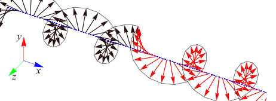
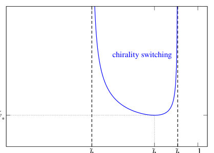
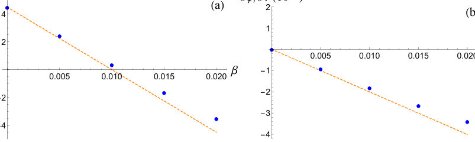
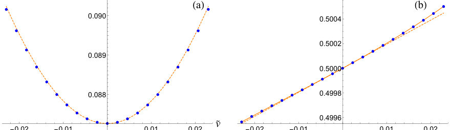
Summary. The paper theoretically models how electric currents and magnetic fields drive domain wall dynamics and chirality switching in planar helimagnets. Using continuum theory, it shows that spin-transfer torques break chiral symmetry, enabling the manipulation of helical states. The findings provide quantitative predictions for pitch renormalization and domain wall velocities.
Why it may be interesting. This work provides a detailed theoretical framework connecting macroscopic transport phenomena (current/field) to microscopic magnetic order parameters (chirality), which is highly relevant for understanding spintronics in complex magnetic materials.
Main problem. The study investigates how electric current and external magnetic fields influence the dynamics of chirality switching in a planar helimagnet.
Main result. The combined action of field and current breaks chiral symmetry, allowing for domain wall motion driven by non-adiabatic spin-transfer torque. However, achieving chirality switching via nucleation is shown to be difficult or impossible under certain theoretical constraints.
Method. The authors employ continuum theory derived near the Lifshitz point, analyzing an effective Lagrangian incorporating spin-transfer torques and external fields.
Model / system. The system is a planar helimagnet with strong easy-plane anisotropy, modeled using a quasi-one-dimensional description parameterized by spherical angles. The dynamics are governed by an effective Lagrangian derived from the underlying Hamiltonian.
Key observables. Domain wall velocity (V_DW), renormalized helical pitch ($ ilde{q}$ or $\psi_R$), and the degree of out-of-plane magnetization ($\cos \vartheta$).
Important parameters / regimes. The ratio of anisotropy energy to exchange coupling ($K/J$), current density ($ ilde{v}$), and magnetic field strength ($ ilde{h}$).
Assumptions / limitations. Approximations include neglecting higher-order gradient terms in the continuum theory, assuming $ ilde{ heta} \ll 1$, and analyzing the system near the Lifshitz point.
Figures summary. Figures compare theoretical predictions to spin-lattice simulations showing pitch renormalization ($ ilde{q}$ vs. $ ilde{v}$) and domain wall velocity scaling with system size ($N_x$).
Paper structure. The paper progresses from establishing the continuum theory for the helimagnet, deriving the effective Lagrangian including torque terms, analyzing the effects of current (dissipative/adiabatic) on pitch renormalization, and finally investigating the conditions required for chirality switching via domain wall dynamics.
We study the effect of electric current and magnetic field on the dynamics of chirality in a helimagnet with a strong easy-plane anisotropy. Using a continuum theory, derived for a quasi-one-dimensional frustrated ferromagnet close to the Lifshitz point, we show that a domain wall connecting domains with opposite chiralities can be driven by the current via the dissipative (non-adiabatic) component of the spin-transfer torque. Further, it is demonstrated that the adiabatic part of the torque in the presence of a magnetic field breaks the symmetry of the effective magnetic potential energy with respect to the chirality. We show that the leading symmetry-breaking term arises in the third order in the magnetization gradient, and derive the conditions of the chirality switching. Our conclusions are supported by numerical spin-lattice simulations.
Authors: Yanbo Qiao, Sariah Al Saati, Jean-Eric Wegrowe
Type: theory · Category: statistical mechanics · PDF: https://arxiv.org/pdf/2607.23589v1
Analysis basis: full PDF text, analyzed in chunks
Topic relevance: methods for driven-dissipative 3/5 · non-equilibrium dynamics 3/5 · correlated / nonlocal dissipation 2/5 · driven-dissipative phase transition 2/5 · non-equilibrium universality 2/5 · Keldysh / 2PI / non-Gaussian methods 1/5 · spintronics-quantum-optics interface 1/5
Summary. This theoretical work analyzes current flow in a spin-Hall device using variational methods based on minimum power dissipation. The key finding is that strong spin relaxation fundamentally alters the system's stationary state, causing the Joule heating in an external load to vanish under certain conditions. This demonstrates a spatial decoupling between pure spin current injection and energy dissipation.
Why it may be interesting. While focused on condensed matter transport, the use of minimum dissipation principles and non-equilibrium thermodynamics connects to general frameworks used in studying energy flow and steady states in complex quantum systems.
Main problem. The study investigates how spin relaxation spatially separates current injection from Joule dissipation when analyzing the stationary state of a spin-Hall bar connected to an external load circuit.
Main result. It is shown that under conditions of strong spin relaxation, the Joule dissipation in the load resistance vanishes, indicating a non-trivial separation between injected pure spin current and energy dissipation.
Method. The analysis employs a variational approach based on minimizing power dissipation (or entropy production) within a two-spin-channel model framework.
Model / system. The system is a homogeneous, non-magnetic conducting layer (spin-Hall bar) modeled with two spin channels ($\uparrow$ and $\downarrow$), driven by an external electric field and connected to a load resistance $R_\ell$.
Key observables. Longitudinal and transverse current densities ($J_{x\sigma}, J_{y\sigma}$), charge/spin accumulations, and the total Joule dissipation power in the load.
Important parameters / regimes. The dimensionless control parameter $\alpha = R/R_\ell$ (load resistance vs. internal resistance) and the spin-relaxation length ($\lambda_{sf}$) relative to the device dimensions ($\ell$).
Assumptions / limitations. Assumptions include longitudinal invariance ($\partial_x=0$), small Hall angle ($ heta \ll 1$), and linear response for spin-flip processes.
Figures summary. Figures illustrate normalized spatial profiles of transverse spin current, spin accumulation, and the load power ratio ($P_{ ext{load}}/P_0$) as a function of $\alpha$ and $\lambda_{sf}/\ell$.
Paper structure. The paper progresses by setting up the variational principle for the stationary state, deriving coupled differential equations for current profiles, analyzing limiting cases (e.g., open/short circuit), and finally quantifying the load power dependence on spin relaxation strength.
The stationary state of a spin Hall bar connected to an external load circuit is investigated through a variational approach based on the principle of minimum power dissipation generalized to the two-spin-channel model. The self-consistent distributions of longitudinal and transverse current densities, alongside the corresponding spin and charge accumulations and dissipation power in the resistance, are derived. Surprisingly, it is shown that the Joule dissipation vanishes when the load resistance is placed at a sufficiently large distance compared with the spin-relaxation length. Such a highly non-trivial global stationary state appears as the most striking characteristic of the injection of pure spin current compared with more usual current injection.
Authors: Felippe Amorim, Washington F. dos Santos, Mauro S. Ferreira, Alexandre Reily Rocha, Caio Lewenkopf
Type: theory · Category: disordered systems and neural networks · PDF: https://arxiv.org/pdf/2607.24373v1
Analysis basis: full PDF text, analyzed in chunks
Topic relevance: exotic spin models in light-matter 3/5 · spintronics-quantum-optics interface 3/5 · Keldysh / 2PI / non-Gaussian methods 1/5 · Kondo & dissipative impurity 1/5 · analog quantum simulation 1/5 · driven-dissipative phase transition 1/5 · methods for driven-dissipative 1/5 · non-equilibrium dynamics 1/5 · non-equilibrium universality 1/5
Summary. This work develops an analytical framework to study electron transport in 2D topological insulators contaminated with dense magnetic impurities. By using the transfer-matrix method, the authors predict and characterize a novel anomalous localization regime where conductance decays sub-exponentially ($\propto e^{-\sqrt{L}}$). This theoretical prediction is validated by showing excellent agreement with experimental measurements on Mn-doped HgTe quantum wells.
Why it may be interesting. The concept of anomalous localization, where decay scales as $\sqrt{L}$ rather than exponentially ($e^{-L/\xi}$), is a non-trivial result in disordered systems that has implications for understanding transport in various quantum materials, including those relevant to AMO physics (e.g., superconducting junctions or engineered disorder potentials).
Main problem. The core problem is understanding how transport properties behave in two-dimensional topological insulators (2DTIs) when subjected to dense, disordered ensembles of magnetic impurities.
Main result. The authors predict an anomalous localization regime characterized by a sub-exponential decay of conductance scaling as $\ln G \propto -\sqrt{L}$, which is confirmed by comparison with experimental data on Mn-doped HgTe quantum wells.
Method. The analysis employs the transfer-matrix formalism applied to the effective 1D Hamiltonian describing edge states, allowing for the calculation of ensemble-averaged transmission coefficients.
Model / system. The system is a 2DTI hosting spin-polarized helical edge states. The disorder is introduced via magnetic impurities modeled as scattering potentials along the edge, analyzed using transfer matrices derived from the BHZ model context.
Key observables. Ensemble-averaged conductance ($\langle G angle$) and transmission coefficient ($\langle T angle$), showing decay scaling with system length $L$ or number of scatterers $N$.
Important parameters / regimes. Effective impurity concentration, exchange coupling strength ($\Lambda$), and system length ($L$). The key scaling is $\ln G \propto -\sqrt{L}$.
Assumptions / limitations. The analysis assumes phase-coherent transport at low temperatures and utilizes approximations like the Central Limit Theorem for averaging disorder effects.
Figures summary. Figures illustrate edge current configurations, the scattering chain structure, and plots showing $\langle T angle$ decay curves demonstrating non-exponential scaling compared to conventional Anderson localization predictions.
Paper structure. The paper develops from analyzing single-impurity scattering using transfer matrices to constructing a full product of multiple scatterer matrices. The core development involves deriving the ensemble average $\langle T angle$, leading to the prediction and derivation of the anomalous $\sqrt{N}$ scaling law for localization.
Two-dimensional topological insulators (2DTIs) harbor spin-polarized edge states that are topologically protected by time-reversal symmetry against non-magnetic structural disorder. However, coupling to magnetic impurities breaks this symmetry, inducing backscattering and destroying perfect quantization. While the impact of isolated dilute magnetic impurities is well understood, the transport properties in the presence of dense, disordered ensembles of magnetic moments remain poorly understood. In this work, we develop an analytical framework, supported by extensive numerical simulations, that captures the behavior of edge transport in two-dimensional topological insulators (2DTIs) with a finite concentration of magnetic impurities. We predict the onset of Anderson localization and uncover an anomalous localization regime characterized by a sub-exponential decay of the conductance, scaling as $\ln {\cal G} \propto -\sqrt{L}$, where $L$ is the system length. Furthermore, we demonstrate that the transport exhibits a universal scaling behavior governed solely by the effective impurity concentration. Applying our model to Mn-doped HgTe quantum wells, we find excellent agreement with experimental data. These findings provide a theoretical foundation for understanding anomalous localization phenomena in magnetically doped topological phases.
Authors: C. A. Monari, A. D. Levin, A. S. Jaroshevich, Z. D. Kvon, V. A. Chitta, D. V. Dmitriev, A. K. Bakarov, G. M. Gusev
Type: experiment · Category: other · PDF: https://arxiv.org/pdf/2607.24386v1
Analysis basis: full PDF text, analyzed in chunks
Topic relevance: non-equilibrium dynamics 3/5 · driven-dissipative phase transition 2/5 · non-equilibrium universality 2/5 · Frenkel-Kontorova 1/5 · Keldysh / 2PI / non-Gaussian methods 1/5 · analog quantum simulation 1/5 · correlated / nonlocal dissipation 1/5 · methods for driven-dissipative 1/5
Summary. This work reports direct experimental evidence of strongly nonlinear electron transport in 2D conductors by engineering Venturi-shaped devices. The observed large current asymmetry is successfully modeled using an electron hydrodynamic framework, confirming the applicability of fluid dynamics principles (like the Bernoulli effect) to solid-state charge transport.
Why it may be interesting. While focused on solid-state transport rather than quantum information, the use of non-equilibrium hydrodynamics to describe electron flow in mesoscopic structures touches upon concepts relevant to open quantum systems where dissipation and geometry dictate dynamics.
Main problem. To observe and study strongly nonlinear transport regimes in electron systems beyond the linear response regime, particularly investigating the role of geometry.
Main result. The authors experimentally observed a pronounced nonlinear voltage response and large diode-like asymmetry in Venturi-shaped 2D electron systems, quantitatively agreeing with a hydrodynamic model analogous to the Bernoulli effect.
Method. Transport measurements were performed on high-mobility 2D electron systems using devices fabricated with engineered Venturi geometries, measuring differential resistance ($r = dV_{xx}/dI_{ ext{dc}}$) under varying DC bias and temperature.
Model / system. The study utilizes a viscous hydrodynamic framework to model electron transport in GaAs quantum wells (single-layer and bilayer). The geometry is crucial, as the nonlinearity is enhanced by the Venturi constriction, leading to convective acceleration effects.
Key observables. Nonlinear voltage response, large diode asymmetry in I-V characteristics, differential resistance ($r$) vs. $I_{ ext{dc}}$ and $T$, and the symmetrized current $I_{ ext{sym}}(V_0)$.
Important parameters / regimes. Venturi geometry dimensions ($W_{ ext{in}}, W_{ ext{out}}$), temperature ($T$), applied DC current ($I_{ ext{dc}}$), and electron-electron scattering rates.
Assumptions / limitations. The analysis treats geometric parameters as effective estimates, ignoring potential renormalizations from finite slip or edge depletion; the hydrodynamic model is assumed valid when $\ell_{ee} \ll W \ll l$.
Figures summary. Figures show optical images and calculated flow patterns for the Venturi geometry. Subsequent figures track differential resistance vs. DC current and temperature, highlighting the strong asymmetry in the Venturi case compared to symmetric channels.
Paper structure. The paper progresses from establishing the need to study nonlinear transport beyond linear response. It details measurements on specific geometries (Venturi vs. constant width) to isolate geometric effects. Finally, it compares these findings with a full hydrodynamic model incorporating temperature and magnetic field dependencies.
The study of electron hydrodynamics provides a powerful framework for understanding transport in ultraclean conductors, yet experimental evidence has thus far been largely restricted to the linear-response regime. Here, we report the direct observation of a strongly nonlinear transport regime in a high-mobility two-dimensional electron system. By engineering devices with a Venturi-shaped wedge geometry specifically designed to enhance convective nonlinearities, we uncover a pronounced nonlinear voltage response and large diodicity in the current-voltage characteristics. Our experimental findings show quantitative agreement with a theoretical model that attributes the observed nonlinearity to the convective acceleration of the electron fluid, analogous to the Bernoulli effect. These results provide compelling evidence for the applicability of the hydrodynamic framework to two-dimensional electron transport and open new avenues for exploring nonlinear and preturbulent phenomena in solid-state systems.
Authors: Su Yang, Wenrong Sun
Type: theory · Category: other · PDF: https://arxiv.org/pdf/2607.23932v1
Analysis basis: full PDF text, analyzed in chunks
Topic relevance: Frenkel-Kontorova 3/5 · non-equilibrium dynamics 2/5 · non-equilibrium universality 2/5 · Keldysh / 2PI / non-Gaussian methods 1/5 · analog quantum simulation 1/5 · driven-dissipative phase transition 1/5 · methods for driven-dissipative 1/5
Summary. This paper analyzes extreme wave dynamics in 2D FPU lattices by deriving two key quasi-continuum limits: the mKdV and KPII equations. The authors use these reduced models, whose solutions are known analytically, to predict and compare complex phenomena like dispersive shock waves against direct numerical simulations of the original lattice. This demonstrates how continuum approximations can effectively model highly nonlinear wave behavior in discrete physical systems.
Why it may be interesting. The work bridges discrete nonlinear physics (FPU lattices) with established continuum theories of wave propagation (mKdV, KPII), providing a robust framework for modeling complex phenomena like rogue waves in physical systems relevant to condensed matter and AMO physics.
Main problem. The study investigates localized patterns and dispersive wave structures within an analog of the two-dimensional Fermi-Pasta-Ulam (FPU) lattice.
Main result. The authors successfully derived quasi-continuum models, specifically the modified KdV (mKdV) and KPII equations, which accurately model various extreme wave phenomena like Rogue Waves and Dispersive Shock Waves in the FPUT lattice.
Method. The approach involves performing dimensional reduction on the discrete lattice equation to derive continuous nonlinear evolution equations. These reduced models are then solved numerically using advanced time integration schemes and compared against direct simulations of the original lattice.
Model / system. The primary system is the 2D FPU lattice, governed by a potential $\Phi(r) = K_1r + K_2r^2 + K_3r^3$. The analysis relies on deriving and comparing its dynamics to continuum limits: the mKdV equation (for $K_2=0$) and the KPII equation (for $K_2 eq 0$).
Key observables. Rogue Waves (RWs), Dispersive Shock Waves (DSWs), solitonic-edge amplitudes ($a_+$), and edge speeds ($S^\pm$).
Important parameters / regimes. $K_1, K_2, K_3$ coefficients defining the potential; regimes defined by $K_2=0$ vs. $K_2 eq 0$.
Assumptions / limitations. The analysis assumes that quasi-continuum long-wave asymptotic limits (mKdV and KPII) provide valid descriptions for the lattice dynamics, though discrepancies are noted as initial jumps increase.
Figures summary. Figures compare rational solutions ($U_2, U_3$) in the reduced models to the lattice dynamics; they also show comparisons of DSW profiles, solitonic-edge features, and rarefaction wave evolution between theoretical predictions and numerical results for both mKdV and KPII reductions.
Paper structure. The paper first establishes the FPU model and derives two key asymptotic reductions (mKdV and KPII). It then uses exact solutions from these reduced models to set initial conditions for the lattice simulation. Finally, it compares theoretical predictions for shock/rarefaction waves against numerical results across different regimes.
In this paper, we study an analog of the scalar two-dimensional Fermi-Pasta-Ulam (FPU) lattice. In particular, a variety of dispersive wave structures and localized patterns are numerically identified in the numerical simulations of the FPU lattice, but, to the best of our knowledge, all of these particular wave structures do not admit analytical closed-form expressions. In order to resolve this issue, we perform a dimensional reduction and accordingly derive a modified KdV equation. Based on this reduction, we first take advantage of some of its exact localized solutions to model the associated wave patterns in the FPU lattice. In addition, we explore the two-dimensional generalization of the Riemann problems for the FPU lattice and the corresponding modified KdV reduction, whose evolution dynamics lead to the formation of multiple composite dispersive structures. Moreover, we propose and rigorously derive the KPII limit of the FPU lattice and investigate their associated wedge problems. Finally, all these relevant numerical dynamics are compared to examine the performance of these quasi-continuum long-wave asymptotic limits.
Authors: Justin R. David, Leonard Schwarze
Type: theory · Category: statistical mechanics · PDF: https://arxiv.org/pdf/2607.24242v1
Analysis basis: full PDF text, analyzed in chunks
Topic relevance: non-equilibrium universality 3/5 · non-equilibrium dynamics 2/5 · Keldysh / 2PI / non-Gaussian methods 1/5 · correlated / nonlocal dissipation 1/5 · driven-dissipative phase transition 1/5 · entanglement & information structure 1/5 · methods for driven-dissipative 1/5
Summary. This paper analyzes how retarded correlation functions behave in finite-temperature CFTs using the AdS/CFT correspondence. The core finding is that at light-like momenta, the scaling of these correlators becomes anomalous, depending on the geometry of the black hole horizon. This work uses sophisticated mathematical techniques like WKB approximation to characterize this breakdown of expected scaling laws.
Why it may be interesting. While focused on gravity/CFT, the study of thermal correlators and spectral functions near singularities (like the light cone) is highly relevant for understanding non-equilibrium dynamics and quantum field theory responses in strongly coupled systems.
Main problem. The study investigates the anomalous scaling behavior of retarded correlators in conformal field theories (CFTs) at finite temperature, specifically when evaluated at light-like momenta.
Main result. The retarded correlator exhibits an anomalous scaling exponent at large light-like momenta ($\omega=|\vec{k}|$), deviating from predictions based on dimensional analysis for generic fixed momenta.
Method. The authors employ advanced techniques including the WKB approximation, exact calculations in low dimensions (d=2), and numerical analysis of differential equations like the Heun equation.
Model / system. The system is modeled using CFTs coupled to gravity via the AdS/CFT correspondence, considering scalar primary operators $\hat{O}$ at finite temperature $T$. The background spacetime involves black holes with various horizon topologies (planar, spherical, hyperbolic).
Key observables. Retarded correlator, $G_R(\omega, \vec{k})$, and its scaling behavior in the light-like limit.
Important parameters / regimes. The dimension of the primary operator ($\Delta$), the spacetime dimension ($d$), and the frequency/momentum ($\omega=|\vec{k}|$).
Assumptions / limitations. The analysis relies on analytical continuation from Euclidean correlators and utilizes approximations like the WKB method for general dimensions.
Figures summary. Not specified by notes, but the paper compares scaling laws across different horizon types (planar vs. spherical/hyperbolic) and channels (stress tensor).
Paper structure. The structure moves from establishing the standard zero-temperature result to analyzing the breakdown of Lorentz invariance at finite temperature in the light-like limit, demonstrating anomalous scaling using specific models and techniques.
We show that retarded correlators in conformal field theories of scalar primary operators evaluated at finite temperature using $AdS/CFT$ scale anomalously at large light like momenta. The anomalous scaling depends on the curvature of the horizon. Setting the momenta equal to the frequency $ω$, the retarded correlator for black holes with planar horizons scales as $ω^{\frac{2}{d+2} (2Δ- d) }$ as opposed to the scaling behaviour of $ω^{2Δ- d}$ expected by dimensional analysis at generic fixed momenta and large frequencies. $Δ$ is the dimension of the primary and $d$, the number of space-time dimensions. For black holes with spherical and hyperbolic horizons when the frequency squared equals the Casimir along the horizon, the retarded correlator scales as $ω^{\frac{2Δ-d}{2} }$. We establish this using exact results in $d=2$, and a numerical analysis of the Heun equation for the $AdS_5$ planar black hole and finally using the WKB approximation in general $d$. The exact result for black holes with hyperbolic horizon as well as the analysis at large $d$ provides additional checks for the anomalous scaling behaviour. Finally we evaluate the anomalous scaling exponent for the stress tensor correlator in all its 3 channels.
Authors: Afreen, J. Delgado-Alvarez, H. Krishna Mishra, J. Castillo-Seoane, Koustav Maiti, Pravrati Taank, A. Borras, A. Barranco, Surajit Saha, Priya Mahadevan, J. R. Sanchez-Valencia, K. V. Adarsh
Type: both · Category: other · PDF: https://arxiv.org/pdf/2607.23051v1
Analysis basis: full PDF text, analyzed in chunks
Topic relevance: driven-dissipative phase transition 3/5 · Keldysh / 2PI / non-Gaussian methods 1/5 · quantum optics experiment 1/5 · spintronics-quantum-optics interface 1/5
Summary. The research investigates how ferroelastic phase transitions affect excitonic behavior in perovskite nanowalls. By using polarization-resolved ultrafast spectroscopy, the authors observe clear, symmetry-dependent splitting of exciton states that evolves into lattice-coupled excitations across temperature changes. This confirms that structural anisotropy and domain texture provide a powerful mechanism for engineering optical responses in soft polar semiconductors.
Why it may be interesting. This work directly addresses open questions in soft matter quantum optics by linking macroscopic symmetry breaking (ferroelasticity) to microscopic electronic structure modification (excitons), which is highly relevant for designing novel optoelectronic materials.
Main problem. The study addresses whether ferroelastic symmetry breaking merely causes optical resonance broadening or actively modifies excitonic states through exciton-lattice coupling in soft semiconductors.
Main result. The research demonstrates polarization-selective excitonic splitting and the emergence of lower-energy lattice-coupled excitations, confirming that ferroelastic texture and phase coexistence tune anisotropic exciton-lattice coupling.
Method. A combination of advanced experimental techniques including temperature-dependent photoluminescence, X-ray diffraction, and polarization-resolved ultrafast transient absorption spectroscopy is employed, complemented by theoretical modeling using an effective Hamiltonian.
Model / system. The system under study is hybrid metal-halide perovskites (MAPbI3) fabricated into highly aligned nanowalls. The physics is modeled using a symmetry-guided effective Hamiltonian that describes the coupling between anisotropic excitonic states and lattice-dressed excitations across structural phase transitions.
Key observables. Polarization-selective excitonic splitting ($\sim 45 ext{ meV}$), lower-energy lattice-coupled excitation ($58 ext{ meV}$), optical anisotropy parameter, and temperature dependence of spectral features.
Important parameters / regimes. Temperature (especially near $160 ext{ K}$ transition), energy separation ($\Delta$), and polarization configuration (co-linear vs. cross-linear).
Assumptions / limitations. The use of highly aligned nanowalls is crucial to overcome averaging effects found in disordered films, allowing for symmetry-selective measurements.
Figures summary. Figures illustrate the temperature evolution of structural phases and excitonic response, showing polarization-selective splitting in nanowalls compared to planar films; one figure details the GLAD setup and texture analysis.
Paper structure. The paper progresses by establishing a symmetry-selective experimental platform (nanowalls), characterizing the structural transitions via XRD/PFM, measuring the optical dynamics using TA spectroscopy across temperature regimes, and finally modeling the observed evolution using an effective Hamiltonian to explain the coupling mechanism.
Hybrid metal-halide perovskites are soft semiconductors in which electronic excitations are strongly influenced by lattice distortions and structural phase transitions. An important open question is whether ferroelastic symmetry breaking merely broadens optical resonances or instead modifies excitonic states through exciton-lattice coupling. Here, we address this question using highly aligned MAPbI3 nanowalls fabricated by glancing-angle deposition, enabling symmetry-selective coupling between ferroelastic texture, structural anisotropy, and a well-defined optical axis. Combining temperature-dependent photoluminescence, X-ray diffraction and polarization-resolved ultrafast transient absorption spectroscopy, we observe a polarization-selective excitonic splitting in the orthorhombic phase at 5 K, characterized by orthogonal optical selection rules and a 45 meV energy separation. Near 160 K, where orthorhombic and tetragonal phases coexist, a lower-energy lattice-coupled excitation emerges 58 meV below the centre of the anisotropically split excitonic structure, consistent with coupling between excitonic and lattice-dressed states. At higher temperatures, these excitations progressively acquire lattice-dressed character accompanied by reduced optical anisotropy. A symmetry-guided effective Hamiltonian captures the evolution from anisotropically split excitons to coupled excitonic and lattice-dressed states across the structural transition. Our results show that ferroelastic texture and phase coexistence can modify exciton-lattice coupling, providing a route to symmetry-selective optical responses in soft polar semiconductors.
Authors: D. A. Matienko, D. P. Borisenko, A. Yu. Kuntsevich
Type: experiment · Category: other · PDF: https://arxiv.org/pdf/2607.24344v1
Analysis basis: full PDF text, analyzed in chunks
Topic relevance: driven-dissipative phase transition 2/5 · quantum optics experiment 2/5 · Kondo & dissipative impurity 1/5 · analog quantum simulation 1/5 · correlated / nonlocal dissipation 1/5 · methods for driven-dissipative 1/5 · non-equilibrium dynamics 1/5 · spintronics-quantum-optics interface 1/5
Summary. This paper demonstrates that large-area CVD graphene can function as a sensitive photodetector by utilizing a substrate-induced photogating mechanism. Measurements confirm the signal originates from charge trapping in the underlying silicon oxide/silicon structure, not direct absorption in graphene itself. The results establish high sensitivity for monolayer devices and guide future optimization efforts.
Why it may be interesting. While focused on solid-state photonics, the study involves charge trapping dynamics at interfaces ($ ext{graphene}/ ext{SiO}_2/ ext{Si}$) under illumination, which touches upon open quantum systems concepts related to environmental coupling and decoherence in nanoscale devices.
Main problem. To explore large-area CVD graphene as a scalable platform for photodetectors by characterizing the underlying photoconductivity mechanism.
Main result. The photoresponse is dominated by substrate-induced photogating in the $ ext{Si}/ ext{SiO}_2/ ext{Si}$ structure, achieving a peak sensitivity of $995 ext{ A/W}$ for monolayer graphene.
Method. Electrical and optical characterization using dual-frequency modulation schemes across various wavelengths to measure photoconductivity and photoresponse dependence on power density.
Model / system. The physical system is large-area CVD graphene grown on $ ext{Si}/ ext{SiO}_2/ ext{Si}$ substrates. The mechanism relies on photogating, where light absorption in the substrate generates trapped charges that modulate the gate voltage experienced by the graphene channel.
Key observables. Photoconductivity signal; photoresponse ($I_{ph}$) vs. optical power density ($P$); sensitivity ($S$) and detectivity ($D^*$); dependence on graphene layer number (mono-, bi-, tri-layer).
Important parameters / regimes. Photon energy relative to the Si band gap; fabrication route (metal contacts before or after transfer); carrier screening effects related to layer count.
Assumptions / limitations. The photogating effect is confirmed as dominant over direct light absorption in graphene, and that device performance depends critically on the fabrication sequence of metal contacts.
Figures summary. Figures illustrate device structure, Raman characterization confirming layer number, and plots comparing photoresponse vs. optical power density for different layer counts and fabrication routes.
Paper structure. The work systematically characterizes the photodetector response by first establishing the mechanism (photogating) using spectral analysis and power dependence, then quantifying performance metrics like sensitivity across varying graphene thicknesses, and finally discussing optimization strategies.
Our work explores large-area CVD graphene as a scalable platform for photodetectors. We show that substrate-induced photogating in graphene/SiO$_2$/Si structures enables a photoconductivity signal in mono-, bi-, and trilayer CVD graphene. The devices respond to illumination with photon energies above the Si band gap and do not respond to telecom frequency, suggesting the photoconductivity mechanism through the photogating. Large sample area and gate voltage-dependent resistivity measurements allow us to prove the dominant role of the photogating directly, demonstrating similarity of the capacitive recharging current and the photoresponse. The sensitivity is the highest (995 A/W) for the monolayer graphene. Increasing the number of graphene layers reduces the sensitivity due to screening and parallel conduction, but can improve detectivity by lowering the noise level. The sensitivity of CVD graphene device depends on fabrication route of photolitography: device with metal contacts fabricated before graphene transfer show higher photoresponce. Thus, our work demonstrate the potential of industrially relevant CVD graphene for sensitive photogating-based photodetectors.
Authors: Bin Xu, Rulei Guo, Jie Sun, Hiroo Suzuki, Takuma Yoshida, Ichiro Nakaya, Koki Sawasaki, Yasuhiko Hayashi, Shohei Chiashi, Tomoki Machida, Junichiro Shiomi
Type: both · Category: other · PDF: https://arxiv.org/pdf/2607.23103v1
Analysis basis: full PDF text, analyzed in chunks
Topic relevance: analog quantum simulation 2/5 · driven-dissipative phase transition 2/5 · non-equilibrium dynamics 2/5 · Frenkel-Kontorova 1/5 · methods for driven-dissipative 1/5 · non-equilibrium universality 1/5
Summary. This work demonstrates that introducing a dipole asymmetry (Janus effect) into $ ext{MoSSe/MoS}_2$ moiré bilayers dramatically enhances the sensitivity of interlayer thermal transport to twist angle. This enhanced tunability is attributed to atomic reconstruction, which weakens interlayer coupling and suppresses phonon transmission in a highly predictable manner.
Why it may be interesting. While focused on thermal transport, the mechanism—controlling interlayer coupling via symmetry breaking (dipole) leading to structural phase transitions (reconstruction)—is analogous to controlling quantum coupling strengths in engineered quantum materials or interfaces.
Main problem. The study aims to understand how atomic reconstruction, driven by Janus-induced symmetry breaking, modifies the twist-angle dependence of interlayer thermal transport in moiré bilayers.
Main result. Janus functionalization leads to an anomalously strong and highly tunable twist-angle dependence of thermal conductance, characterized by a pronounced minimum at small twist angles.
Method. The research combines experimental measurements (TDTR for thermal conductivity, Raman/PL spectroscopy) with theoretical calculations (DFT modeling of structural relaxation and charge density).
Model / system. The system is $ ext{MoSSe/MoS}_2$ moiré bilayers, which are Janus 2D materials exhibiting an intrinsic out-of-plane dipole. The physics involves atomic reconstruction into locally distorted aperiodic moiré patterns.
Key observables. Interlayer thermal conductance ($ ext{TC}$), low-frequency Raman modes (breathing mode frequency), and charge density distribution/Bader net atomic charges.
Important parameters / regimes. Twist angle ($ heta$), small twist angles ($0^\circ - 5^\circ$), and the presence of the Janus dipole moment.
Assumptions / limitations. The rigid stacking model is used for periodicity estimation, but the core mechanism relies on structural relaxation (atomic reconstruction) which deviates from this ideal assumption.
Figures summary. Figures illustrate $ ext{TC}$ vs. twist angle showing minima; Raman/PL maps confirm Janus conversion; DFT results show charge density changes linked to interlayer coupling strength.
Paper structure. The paper progresses by first establishing the structural difference (Janus effect) compared to homo-bilayers, then measuring the resulting $ ext{TC}$ modulation experimentally, and finally using DFT calculations and spectroscopic analysis to link this strong tunability directly to atomic reconstruction pathways.
In two-dimensional moiré bilayers, atomic reconstruction, the spontaneous structural relaxation toward energy-minimizing stacking registries in the near-commensurate regime, can strongly modify local stacking and interlayer coupling, providing a possibility to significantly control phonon-mediated properties. Here we show that the twist-angle dependence of interlayer thermal conductance can be modified by introducing Janus-induced mirror-symmetry breaking into bilayer MoS2. The intrinsic out-of-plane dipole in MoSSe/MoS2 bilayers leads to frictionless interface, and reduces the lattice deformation energy, thereby promoting atomic-reconstruction into locally distorted aperiodic moiré patterns. These features weaken interlayer coupling and suppress phonon transmission across the interface, leading to an anomalously strong twist-angle dependence of thermal conductance, with a pronounced minimum at small twist angles and a reduction rate nearly one order of magnitude larger than that of twisted bilayer MoS2. Our results demonstrate that interlayer thermal transport is modified by atomic reconstruction, highlighting Janus-induced mirror-symmetry breaking as an effective way to promoting phonon engineering in two-dimensional moiré structures.
← Index · ← Previous · Next →